Conference Scan: Rising and Falling Terms - Conference Proceedings from ICALT, ECTEL and ICWL 2010
This is an un-interpreted and automatically-generated report on emerging, rising and falling terms from the abstracts of the IEEE International Conference on Advanced Learning Technolgies European Conference on Technology Enhanced Learning International Conference on Web-based Learning. It is one part of the "Weak Signals Analysis" work of the TEL-Map Project. The same analytical method is also applied to blogs, hence the term "document" is used in plots; this is identical to an abstract.
All plots will open in a new window/tab as 1000x1000 pixed images if clicked on.
The Method
The analysis involves the application of text mining to the abstracts of the conference proceedings. The target year (2010) is contrasted against the previous 4 previous years. The details of the text mining are available elsewhere but for the purpose of interpretation it should be noted that "stemming" and "stop-word" removal has been used. "Stop-word" removal means that common words are removed before beginning the analysis. "Stemming" involves the conversion of similar words that differ only by their ending into a truncated form that is used as the "term" in the analysis. For the purpose of readability the shortest word that produces the term is generally given, although sometimes the algorithm fails and the stemmed version is shown. This should be born in mind when examining the results.
Four views on the differences between the target and previous years' abstracts are presented:
- New Terms, where this report highlights terms that appear at least 4 times in the target year's abstracts and in at least 2 different abstracts but not at all in the previous years.
- Nearly-new Terms, where terms appearing between 1 and 2 times in the previous years are considered. They must appear 6 times and in at least 2 different abstracts in the target set to be highlighted.
- Rising Terms, where term frequency rises are calculated and rises of more than 180% are highlighted. A term must appear 8 times in the previous years set for a term to be considered.
- Falling Terms, are obtained similarly to Rising Terms but only the top 10% of terms in the previous years set are considered and a change of -80% is needed for the term to be highlighted in the results.
For Rising and Falling Terms, the change is calculated on the proportion of all stemmed words that are the term in question. For example if 2.00% of stemmed words in the previous years set was "learn" and 2.12% pertains to the current set, then the rise is 6%.
Statistics and Overall Pattern
Corpus Statistics
There are 363 abstracts in 2010 and 1601 in the 4 previous years. Within these abstracts, which define the corpus, there are 6294 distinct terms after removing stop words and applying stemming.The summary statistics for the number of times each term appears in the corpus are: mean=17.87, median=2, maximum=4296.
For the set of New Terms:
- the number of times each term appears in the target set has: mean=1.437, median=1, maximum=10.
- after selecting terms that appear at least 4 times and in at least 2 different abstracts, there are 13 terms in scope which appear in 28 out of the 363 target abstracts.
For the set of Nearly-New Terms:
- the number of times each term appears in the target set has: mean=1.526, median=1, maximum=9.
- after selecting terms that appear at least 6 times and in at least 2 different abstracts, there are 4 terms in scope which appear in 13 out of the 363 target abstracts.
For the set of Rising Terms:
- the % rise from the previous years to the target year has: mean=52.11, median=33.82, maximum=640.6.
- after selecting terms that rise by at least 180%, there are 19 terms in scope which appear in 125 out of the 363 target abstracts.
The set of Falling Terms (the % fall from the previous years to the target year) has summary statistics of: mean=-30.87, median=-27.7, maximum=-0.03885.
New and Nearly-New Terms
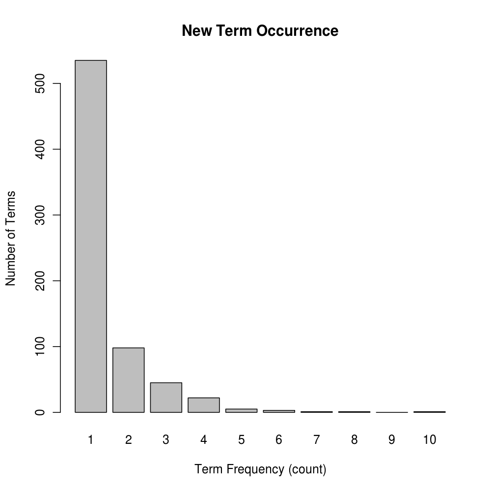
Figure 1: The number of terms that appear 1,2,3... times in the target year set not at all in the previous years. In this case there are 98 new terms that appear twice.
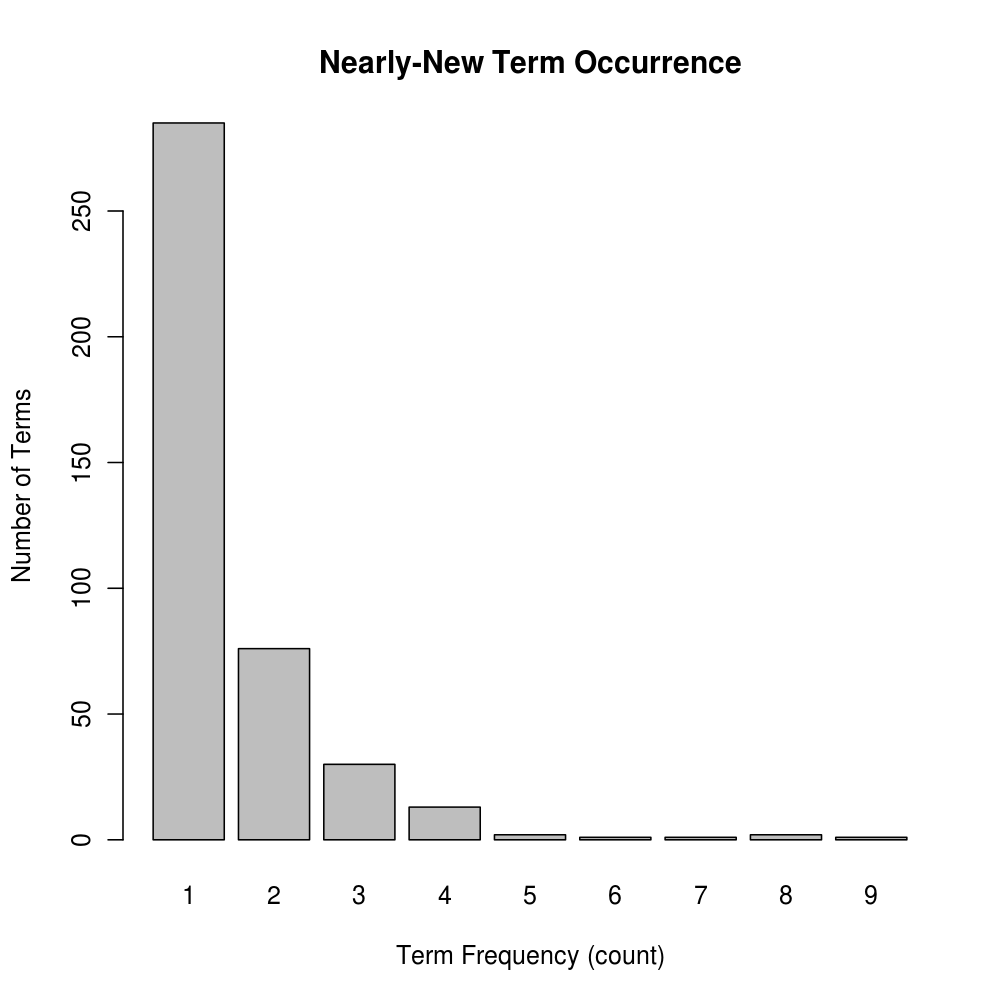
Figure 2: The number of terms that appear 1,2,3... times in the target year set and only between 1 and 2 times in the previous years.
Rising and Falling Terms
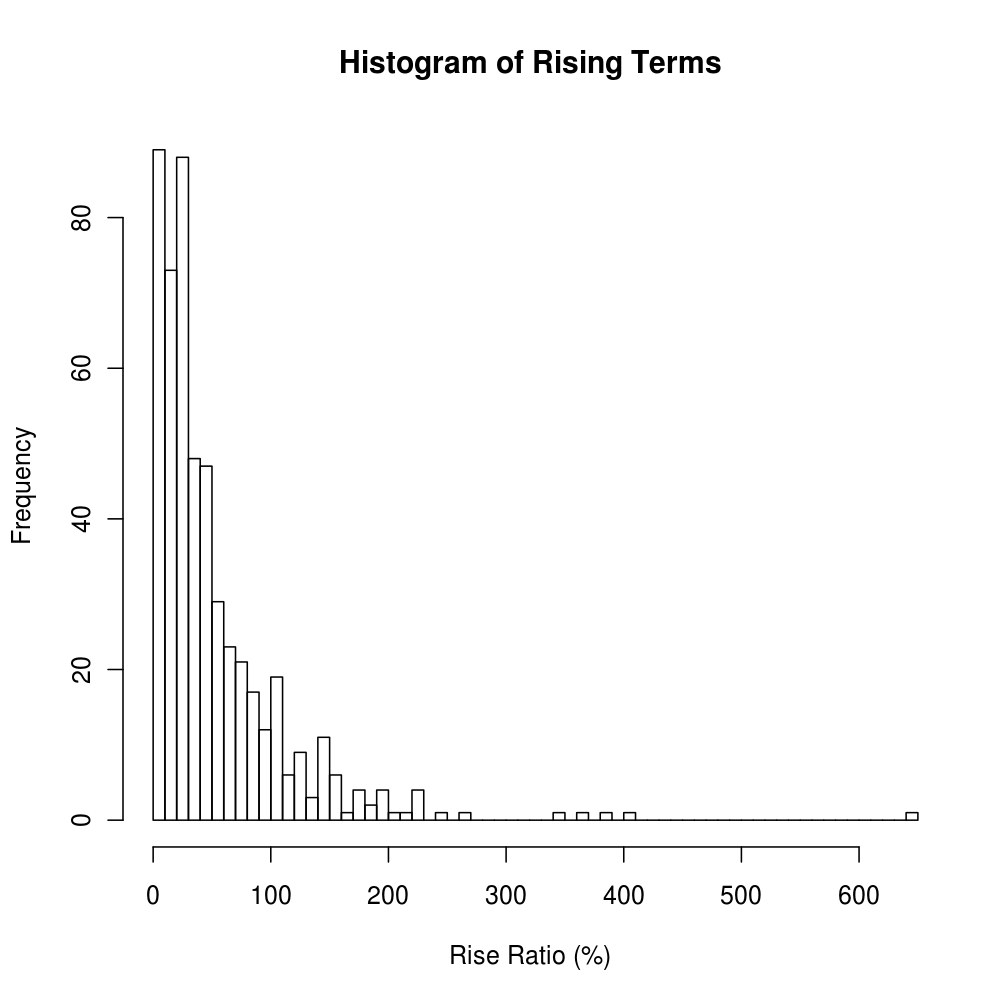
Figure 3: Number of terms with a given % rise, limited to the terms appearing at least 8 times in the previous years set.
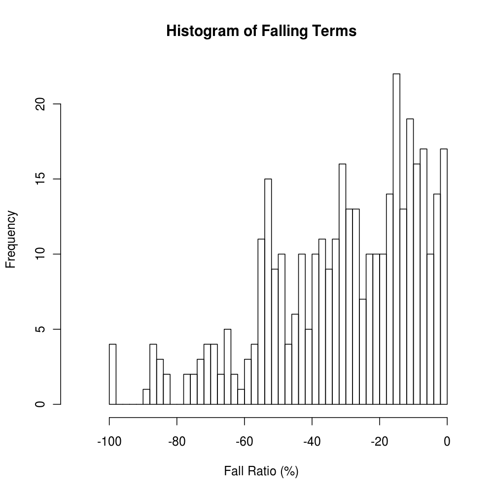
Figure 4: Number of terms with a given % fall, limited to the most frequent 10% of terms in the previous years set of abstracts. For the current corpus, this means the term must occur at least 24 times in the previous 4 years. A 100% fall indicates that the term does not appear in the target year's abstracts.
Highlighted New Terms
Highlighted New Terms appear for the first time and with at least 4 occurrences in the target year of 2010.
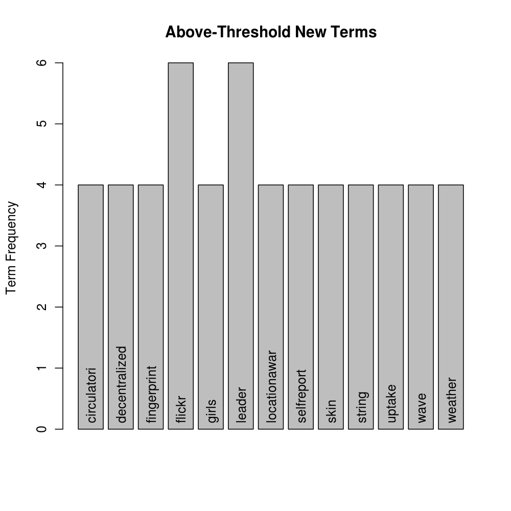
Figure 5: Frequenies of occurrence of the New Terms in the target year.
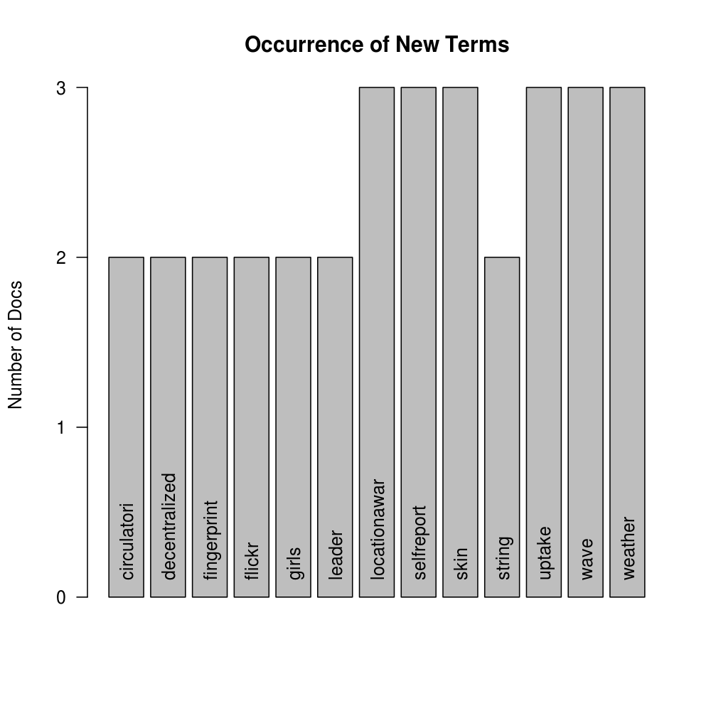
Figure 6: The number of abstracts containing each New Term. A New Term that appears in a large number of abstracts is likely to be a stronger indication of a new trend that a New Term that is concentrated in a single abstract.
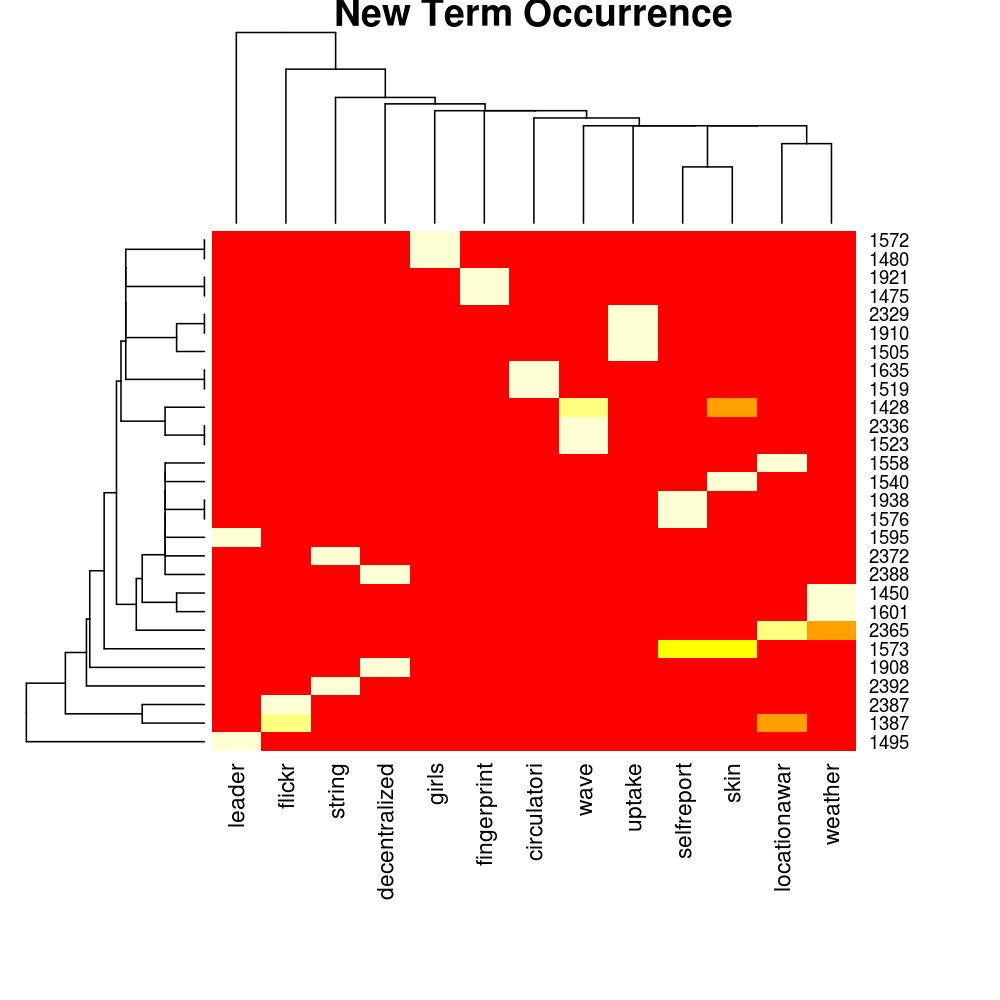
Figure 7: Heatmap to show the distribution of the New Terms among abstracts. Red cells indicate the term does not appear. Orange cells indicate a relatively less-frequent term and yellow cells indicate terms that are relatively more frequent
among the New Terms in a given document. This also shows how terms may be clustered according to their occurrence and how abstracts may be clustered according to the Terms within them. The numbers are the identifiers assigned to each paper.
Note: In plots such as the above, where terms are shown they will usually be a short word but may occasionally be truncated or have an unusual ending. This is a consequence of the stemming process, where related words are rendered into a single form that is used in the processing. The word that actually occurs in a given abstract may be one of the related forms. The unusual endings occur when the reverse-lookup algorithm fails. It should also be noted that punctuation is removed so hyphenated forms become concatenated. An unfamiliar term may be an abbreviation or project/product acronym.
Abstracts Containing the Highlighted New Terms
The title of of the paper relating to each abstract containing a given New Term is listed, whereas abstracts are only shown for the most frequent New Terms. See the end of this report for information about the source of abstracts and access to the conference proceedings.
Papers Containing "flickr"
- Identifying Animals with Dynamic Location-aware and Semantic Hierarchy-Based Image Browsing for Different Cognitive Style Learners.
-
Dunwei Wen, Ming-Chi Liu, Yueh-Min Huang, Kinshuk, Pi-Hsia Hung, ICALT 2010 (id=1387)
Lack of overall ecological knowledge structure is a critical reason for learners' failure in keyword-based search. To address this issue, this paper firstly presents the dynamic location-aware and semantic hierarchy (DLASH) designed for the learners to browse images, which aims to identify learners' current interesting sights and provide adaptive assistance accordingly in ecological learning. The main idea is based on the observation that the species of plants and animals are discontinuously distributed around the planet, and hence their semantic hierarchy, besides its structural similarity with WordNet, is related to location information. This study then investigates how different cognitive styles of the learners influence the use of DLASH in their image browsing. The preliminary results show that the learners perform better when using DLASH based image browsing than using the Flickr one. In addition, cognitive styles have more effects on image browsing in the DLASH version than in the Flickr one.
- The Detection of Scene Features in Flickr
-
Chunjie Zhou, Pengfei Dai and Jianxun Liu, ICWL 2010 (id=2387)
Detecting events from web resources has attracted increasing research interests in recent years. Flickr is one of Web resources, which is used to share photos. Complex event detection on Flickr includes the detection of tourist features, user’s interest, and so on. With the increasing user requirements of efficient and personalized services, the detection of scene features in Flickr is urgently needed. In this paper we propose a novel method to detect tourist features of every scene, and its difference in different seasons as a probabilistic combination of tags. The use of topic models enables the automatic detection of such patterns, which can translate unstructured tag information into structured event form. The experimental evaluation using real datasets in Flickr show the feasibility and efficiency of the proposed method.
Papers Containing "leader"
- A Chorus Learning Support System Based on the Tutoring Knowledge of the Chorus Leader.
-
Mizue Kayama, Kazunori Itoh, Kazushi Asanuma, Masami Hashimoto, Makoto Otani, ICALT 2010 (id=1495)
The purpose of this study is to explore a chorus learning support environment based on the tutoring knowledge of the chorus leader. In general chorus practice, a chorus leader tends to instruct his chorus members based not on score information, but a chorus leader's sense of value and/or his musical philosophy. We try to extract the tutoring knowledge necessary to evaluate/review a singing voice from the chorus leader. The extracted knowledge is expressed in a computational form and implemented in a learning support system. In this paper, a chorus learning support system is proposed. At first, the tutoring knowledge of a chorus leader is described. Next, the architecture and functions of the proposed system are shown. Finally, we evaluate the adequacy of the extracted knowledge and the effectiveness of chorus learning with our system.
- Deepthink: A Second Life Environment for Part-time Research Students at a Distance.
-
Lucia Rapanotti, Leonor Barroca, Maria Vargas-Vera, Ahmad J. Reeves, ICALT 2010 (id=1595)
This paper reports on the design of a Second Life campus for a new innovative post-graduate research programme at the Open University, UK, a world leader in supported distance higher education. The programme, launched in October 2009, is a part-time Master of Philosophy (MPhil) to be delivered at a distance, supported by a blend of synchronous and asynchronous Internet technologies. This paper briefly discusses the pedagogical thinking behind the Second Life campus, and the way the implementation was designed to meet the pedagogy. The paper also reports on the outcome of an early evaluation we have conducted.
Papers Containing "circulatori"
- Learning Biology with the Animated Agent in Game Based Learning Environment.
-
Hsin I Yung, ICALT 2010 (id=1519)
The paper delineates the design of the animated agent with using Socratic dialogue to facilitate learning in game based learning environment (the biology adventure). Especially, the biology adventure is designed to model virtual scenarios of the human circulatory system. It presents natural phenomena and inquiry prompts to emphasize the conceptual knowledge of the human circulatory system. Specifically, the spatial aesthetics attract students in the interactive environment that represents the complex biology structure. It is the spirit of the game which students play as the biologist. Through the exploration, students interact with the animated agent to examine their concepts continuously as well as organize their mental models.
- Collaborative Development of an Augmented Reality Application for Digestive and Circulatory Systems Teaching.
-
David C. Pérez López, Manuel Contero, Mariano Alcañiz Raya, ICALT 2010 (id=1635)
Augmented Reality (AR) appears as a promising technology to improve students motivation and interest and support the learning and teaching process in educational contexts. We present the collaborative development of an AR application to support the teaching of the digestive and circulatory systems. We developed this system with the support of a private Spanish school. The main objective of the application is to show the student in primary school, in the most accurate way, digestive and circulatory systems. By other hand, we also develop our own AR library, HUMANAR, in order to ensure the integration of AR into our game engine and to overcome some drawbacks present in some public libraries. Moreover, our system provides several advantages over the traditional learning as books, videos or practice with animal organs.
Papers Containing "decentralized"
- Ultra-Personalization and Decentralization: The Potential of Multi-Agent Systems in Personal and Informal Learning
-
Ali M. Aseere, David E. Millard and Enrico H. Gerding, ECTEL 2010 (id=1908)
Agents are autonomous software components that work with one another in a decentralized fashion to achieve some end. Agent systems have been used in Technology Enhanced Learning (TEL) before, but these applications seldom take advantage of the fact that each agent may have its own goals and strategies, which makes agent systems an attractive way of providing personalized learning. In particular, since agents can solve problems in a decentralized way, this makes them an attractive way of supporting informal learning. In this paper we use scenarios to examine how common problem solving techniques from the agents world (voting, coalition formation and auction systems) map to significant challenges for personalized and informal learning in the TEL world. Through an agent simulation we then show how an agent system might perform in one of those scenarios and explore how different agent strategies might influence the outcome. Based on this work we argue that agent systems provide a way of providing ultra-personalization of the learning process in a decentralized way and highlight equitability and scrutability as two key challenges for future investigation.
- QoS-Based Probabilistic Fault-Diagnosis Method for Exception Handling
-
Zhen Zhu and Wanchun Dou, ICWL 2010 (id=2388)
Fault-diagnosis is an essential prerequisite for exception handling. There are several attempts to apply it in the decentralized systems like Web Service. However, few of them discuss the fault-diagnosis technics along with QoS. In this paper, we base our work on an existing framework, and employ the Bayesian Network which takes QoS under consideration to operate a probabilistic analysis. We aim to evaluate the precedence of each diagnosis returned after the diagnostic procedure with a posterior probability and thus provide more support for exception handling.
Papers Containing "fingerprint"
- Web Tests in LMS Using Fingerprint Identification.
-
Charo Gil, Manuel Castro, Mudasser F. Wyne, Russ Meier, ICALT 2010 (id=1475)
- Automatic Detection of Local Reuse
-
Arno Mittelbach, Lasse Lehmann, Christoph Rensing and Ralf Steinmetz, ECTEL 2010 (id=1921)
Papers Containing "girls"
- Spatializing Social Practices in Mobile Game-Based Learning.
-
Susan Gwee, Yam San Chee, Ek Ming Tan, ICALT 2010 (id=1480)
- Offering Early Success Experiences in Software Construction: Experiences Teaching Dynamic Website Development to High School Girls.
-
Mary Beth Rosson, Hansa Sinha, Tisha Hansford, Jan Mahar, ICALT 2010 (id=1572)
Papers Containing "locationawar"
- Identifying Animals with Dynamic Location-aware and Semantic Hierarchy-Based Image Browsing for Different Cognitive Style Learners.
-
Dunwei Wen, Ming-Chi Liu, Yueh-Min Huang, Kinshuk, Pi-Hsia Hung, ICALT 2010 (id=1387)
- A Collaborative Ubiquitous Learning Approach for Conducting Personal Computer-Assembling Activities.
-
Judy C. R. Tseng, Chih-Hsiang Wu, Gwo-Jen Hwang, ICALT 2010 (id=1558)
- A Narrative Architecture for Story-Driven Location-Based Mobile Games
-
Katsiaryna Naliuka, Tara Carrigy, Natasa Paterson and Mads Haahr, ICWL 2010 (id=2365)
Papers Containing "selfreport"
- A Preliminary Study on Learners Physiological Measurements in Educational Hypermedia.
-
Nikos Tsianos, Panagiotis Germanakos, Zacharias Lekkas, Anna Saliarou, Costas Mourlas, George Samaras, ICALT 2010 (id=1573)
- An Analysis of Students' Intention to Use Ubiquitous Video Game-Based Learning System.
-
Chun-Yi Shen, Han-Bin Chang, Wen-Chih Chang, Te-Hua Wang, ICALT 2010 (id=1576)
- Who Students Interact With? A Social Network Analysis Perspective on the Use of Twitter in Language Learning
-
Carsten Ullrich, Kerstin Borau and Karen Stepanyan, ECTEL 2010 (id=1938)
Papers Containing "skin"
- Prediction of Players Motivational States Using Electrophysiological Measures during Serious Game Play.
-
Lotfi Derbali, Claude Frasson, ICALT 2010 (id=1428)
- Self-Esteem Conditioning for Learning Conditioning.
-
Imene Jraidi, Maher Chaouachi, Claude Frasson, ICALT 2010 (id=1540)
- A Preliminary Study on Learners Physiological Measurements in Educational Hypermedia.
-
Nikos Tsianos, Panagiotis Germanakos, Zacharias Lekkas, Anna Saliarou, Costas Mourlas, George Samaras, ICALT 2010 (id=1573)
Papers Containing "string"
- Duplicate Page Detection Algorithm Based on the Field Characteristic Clustering
-
Feiyue Ye, Junlei Liu, Bing Liu and Kun Chai, ICWL 2010 (id=2372)
- Designing Personalized Learning Difficulty for Online Learners
-
Guangli Zhu, Wenjuan Liu and Shunxiang Zhang, ICWL 2010 (id=2392)
Papers Containing "uptake"
- A Formative eAssessment Co-Design Case Study.
-
David A. Bacigalupo, W. I. Warburton, E. A. Draffan, Pei Zhang, Lester Gilbert, Gary B. Wills, ICALT 2010 (id=1505)
- Investigating Teachers’ Understanding of IMS Learning Design: Yes They Can!
-
Michael Derntl, Susanne Neumann, Dai Griffiths and Petra Oberhuemer, ECTEL 2010 (id=1910)
- Visualizing Activities for Self-reflection and Awareness
-
Sten Govaerts, Katrien Verbert, Joris Klerkx and Erik Duval, ICWL 2010 (id=2329)
Papers Containing "wave"
- Prediction of Players Motivational States Using Electrophysiological Measures during Serious Game Play.
-
Lotfi Derbali, Claude Frasson, ICALT 2010 (id=1428)
- Students' Competitive Preferences on Multiuser Wireless Sensor Classroom Interactive Environment.
-
Ben Chang, Chien Wen Chen, ICALT 2010 (id=1523)
- Using Social Software for Teamwork and Collaborative Project Management in Higher Education
-
Na Li, Carsten Ullrich, Sandy El Helou and Denis Gillet, ICWL 2010 (id=2336)
Papers Containing "weather"
- Facilitating Learning Interests Through Mobile Information Visualization.
-
Yuan Xun Gu, Raymond Koon Chuan Koh, Vivian Hsueh-hua Chen, Henry Been-Lirn Duh, ICALT 2010 (id=1450)
- Using Tangible Learning Companions in English Education.
-
Yi Hsuan Wang, Shelley Shwu-Ching Young, Jyh-Shing Roger Jang, ICALT 2010 (id=1601)
- A Narrative Architecture for Story-Driven Location-Based Mobile Games
-
Katsiaryna Naliuka, Tara Carrigy, Natasa Paterson and Mads Haahr, ICWL 2010 (id=2365)
Highlighted Nearly-New Terms
Highlighted Nearly New Terms appear between 1 and 2 times in the previous years and at least 6 times in the target year of 2010.
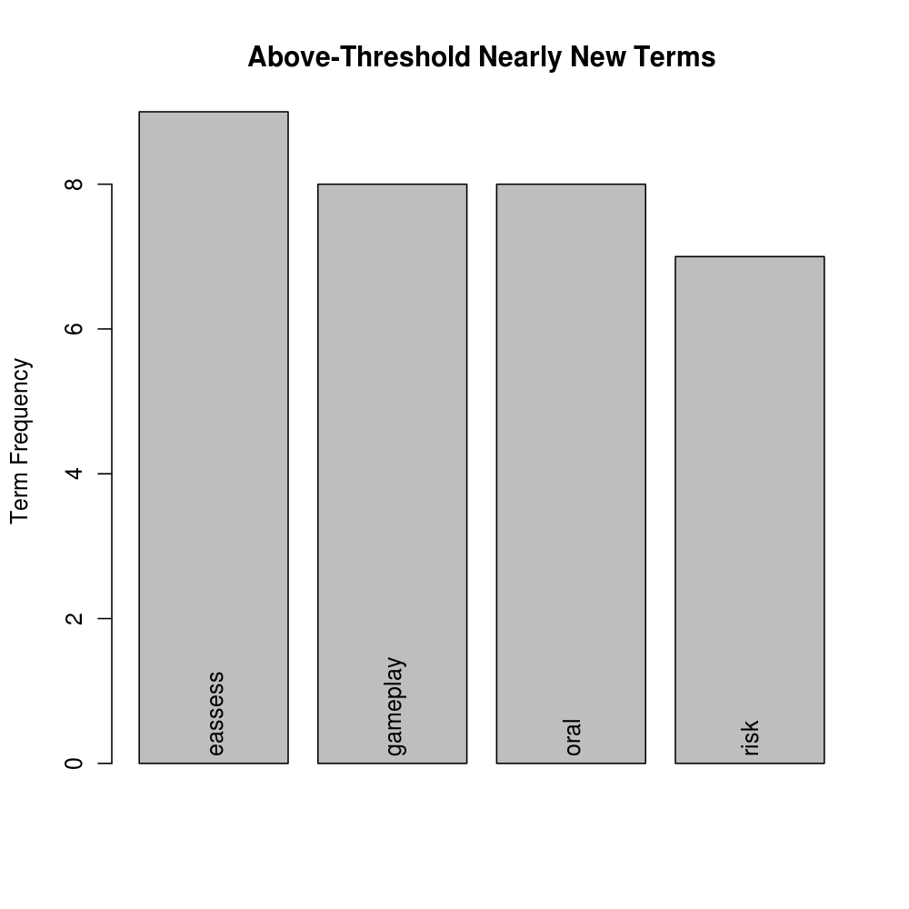
Figure 8: Frequenies of occurrence of the Nearly New Terms in the target year.
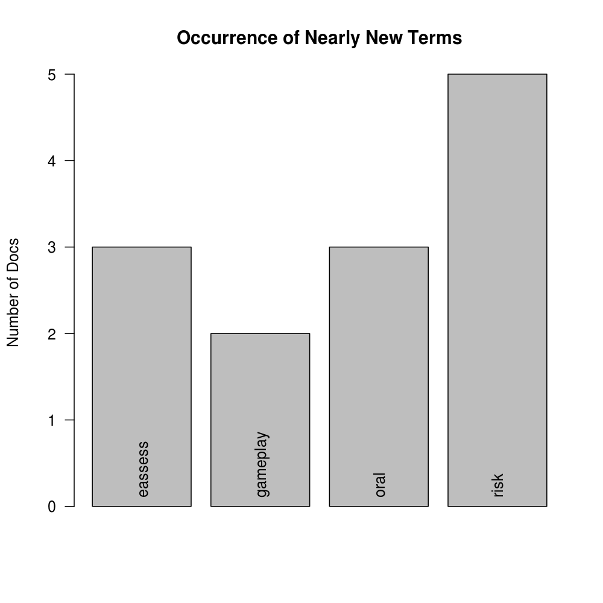
Figure 9: The number of abstracts containing each Nearly New Term. A Nearly New Term that appears in a large number of abstracts is likely to be a stronger indication of a new trend that a Nearly New Term that is concentrated in a single abstract.
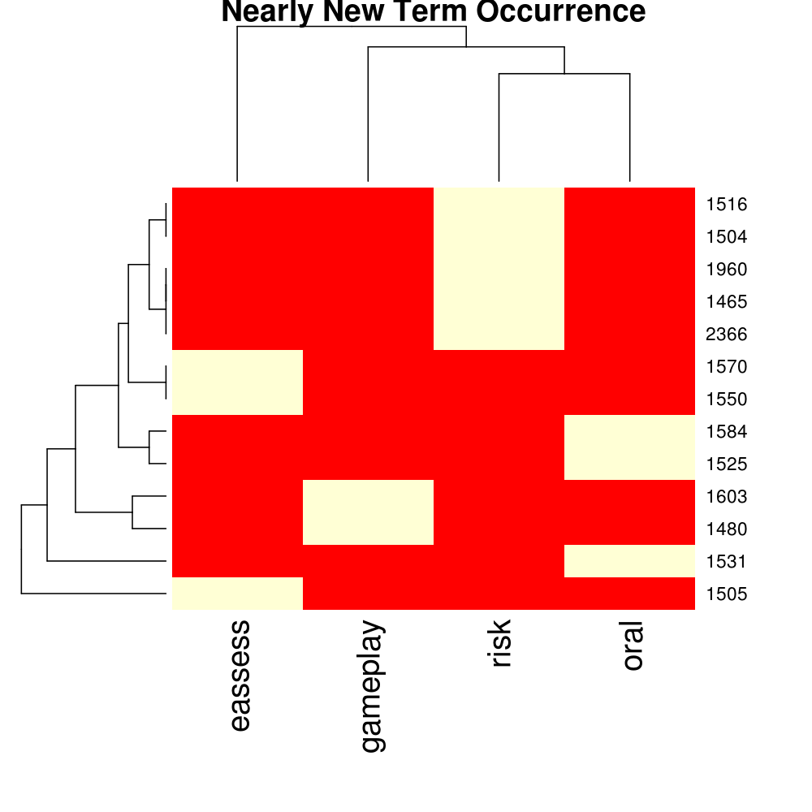
Figure 10: Heatmap to show the distribution of the Nearly New Terms among abstracts. Red cells indicate the term does not appear. Orange cells indicate a relatively less-frequent term and yellow cells indicate terms that are relatively more frequent
in a given document. This also shows how terms may be clustered according to their occurrence and how abstracts may be clustered according to the Terms within them. The numbers are the identifiers assigned to each paper.
Abstracts Containing the Highlighted Nearly New Terms
The title of of the paper relating to each abstract containing a given Nearly New Term is listed, whereas abstracts are only shown for the most frequent Nearly New Terms. See the end of this report for information about the source of abstracts and access to the conference proceedings.
Papers Containing "eassess"
A Formative eAssessment Co-Design Case Study.
David A. Bacigalupo, W. I. Warburton, E. A. Draffan, Pei Zhang, Lester Gilbert, Gary B. Wills, ICALT 2010 (id=1505)
Formative eAssessment can be very helpful in providing high quality higher education assignments. However, there are obstacles restricting the uptake of formative eAssessment in higher education including both cultural and technical issues. When a university is encouraging the uptake of formative eAssessment internally it is useful to have case studies from academic schools detailing how academics enthusiastic about formative eAssessment have used it in their modules. It is particularly helpful if these case studies document: i.) the principle obstacles that these champions had to deal with, ii.) a cooperative-design process through which these obstacles have been dealt with by the champions (with assistance from e.g. learning technologists), and iii.) an evaluation of the effectiveness of the resulting formative eAssessments. However there is a shortage of such real-world long-term case studies. This paper helps fill this gap in the literature by describing the case of a Modern Languages module within a Russell Group university (Southampton). The formative eAssessment solution resulting from the case study utilises our QTI, mobile QTI, accessibility, and web 2.0 tools and can be positioned at the cutting edge of formative eAssessment practice. We have evaluated this with undergraduate student volunteers from Spanish modules and received positive feedback.
A Set of Software Tools to Build an Author Assessment Package on Moodle: Implementing the AEEA Proposal.
Beatriz E. Florián G, Silvia Baldiris, Ramón Fabregat, Alexis De la Hoz Manotas, ICALT 2010 (id=1550)
A set of new types of assessment is required for learning management systems (LMSs), and there is a need for a way to assess lifelong adaptive competencies. Proposed solutions to these problems need to preserve the interoperability, reusability, efficiency and abstract modeling already present in LMSs. This paper introduces a set of software tools for an author assessment package on the LMS Mooddle being developed as part of adaptive e-learning engine architecture (AEEA). The principal features of this set are: 1) The set avoid editing items for a 360-degree feedback evaluation, 2) Whole items and tests are linked to levels of competencies acquisition, 3) The competency-based e-assessment data model are based on e-learning specification and complemented with XML data on the appraised competencies, 4) Items and tests are storage in repositories, and 5) The tools are integrated within Moodle to facilitate the design of an assessment plan.
Case-Based Medical E-assessment System.
Rozemary Scarlat, Liana Stanescu, Elvira Popescu, Dumitru Dan Burdescu, ICALT 2010 (id=1570)
This paper presents the design, development and testing of an e-assessment system, focusing on the practical part of the Medical School training. It also discusses several important aspects that need to be taken into consideration when creating an e-learning application for the medical domain. For example, the application must accustom the student with certain procedure protocols, it must be available to as many scholars as possible and it must be appealing in order for the students to exercise a greater amount of time. The results indicate that case-bcase-based virtual patient systemsased virtual patient systems can help prepare experts in the medical field with low costs and without allowing patients to be treated by still-training doctors.
Papers Containing "gameplay"
Spatializing Social Practices in Mobile Game-Based Learning.
Susan Gwee, Yam San Chee, Ek Ming Tan, ICALT 2010 (id=1480)
The objectives of this paper are to explore the characteristics of patterns of participation in social and game-play spaces outside the classroom of 10 fifteen-year-olds engaging in mobile game-based learning, and to determine whether there are gender differences in their use of social and game-play spaces. The data indicate some evidence of gender differences in their use. The boys in the study tended to engage in mobile game-based learning more than girls in game-play spaces. The girls tended to use the social space more than the boys and were especially more active in their use of the in-game chat system.
Game-play as Knowledge Transformation Process for Learning.
Ming-Puu Chen, Chun-Yi Shen, ICALT 2010 (id=1603)
Through a pedagogically meaningful process of game-play, content, skills and attitudes can be integrated in the gaming environment to engage learners and enhance learning by game-play. This study examined the process of game-play from the perspective of knowledge transformation. Pedagogical perspectives were proposed to serve as learning frameworks for learning from game-play. It is suggested that effective knowledge transformation in the learners can be achieved by means of deliberate design of the game-play process as well as the role of the learners.
Papers Containing "oral"
Extending Open Space Technology for Blended Learning.
Isabel Pereira, Antonio Dias Figueiredo, ICALT 2010 (id=1525)
This paper presents a pedagogical strategy for the exploration of blended-learning in higher education. A key component is the adoption of Open Space Technology (OST) to group students according to their motivation for the topics to be studied and tasks to be performed, rather than following their personal affinities. We have developed and tested the strategy throughout two academic years. In the first year, we explored OST in its regular, face-to-face, approach. Although the results were good, we felt that learning could be further improved with a period of on-line discussion after the face-to-face session. With this in mind, in the following year we explored a combination of face-to-face and on-line activities, in what we called blended-OST (or b-OST). We concluded that this approach could lead to a deeper discussion of the proposed tasks, to the emergence of additional possible tasks, and to the participation of students who tended to shy away from expressing their opinions orally. The data collected shows that the involvement of the students increased in the second year. In our view, the use of blended-OST has contributed to the creation of a better learning context. The students' opinions, collected after the course, also support this view.
An Audio Book Platform for Early EFL Oral Reading Fluency.
Kuo-Ping Liu, Cheng-Chung Liu, Chih-Hsin Huang, Kuo-Chun Hung, Chia-Jung Chang, ICALT 2010 (id=1531)
Oral reading fluency is essential to overall reading achievements and repeat reading has been found to be an effective strategy for oral reading fluency. Choral reading is the most authentic use of repeated readings in the EFL primary grades. However, teachers have neither sufficient time nor adequate expertise to deal with non-fluent readers. Hence, challenges with oral reading fluency and motivation have long been considered a common characteristic for teacher and students. Hence, this study proposed a one-to-one Audio Book Platform incorporating repeated reading strategy and record-play function. An intact sample of two classes of the sixth graders in Taiwan were randomly assigned and treated as experimental group and control (choral reading) group. An empirical study is conducted to assess whether there are differences in the effectiveness of enhancing oral reading fluency. A questionnaire elicited information concerning motivation included (1) anxiety, (2) intrinsic goal orientation, (3) extrinsic goal orientation, (4) task value, and (5) self-regulation is also conducted. Although no significant difference was uncovered in oral reading fluency and motivation, the findings could serve as some general principles for researchers who would like to experiment with one-to-one repeated reading in similar contexts.
Winkball for Schools: An Advanced Video Modelling Technology for Learning Visual and Oral Communication Skills.
James Ohene-Djan, ICALT 2010 (id=1584)
Although the potential benefits of using digital video in educational settings is well researched, little work has been conducted into how video modelling and messaging technologies can be devised and implemented to support teaching in educational settings. Video is generally used as a passive medium whereby students watch a video presentation to ascertain information. In this paper we present Winkball for Schools, a new internet-based video messaging and broadcasting technology designed to support the teaching of oral and visual communication skills in schools. Through the use of video modelling instructional techniques and video messaging communications technologies we show how video can be deployed as an active medium to engage students when learning communication skills. Using Winkball for Schools students can record, send and share video messages with other students in classroom settings, at home and with students at different schools. Students can also create and post content to video notice boards for group viewing. It is hoped that through the wide scale adoption of Winkball technology the teaching of oral and visual communication skills within schools can benefit, and relationships between students in different countries can be further established.
Papers Containing "risk"
Towards a Competence Based System for Recommending Study Materials (CBSR).
Athitaya Nitchot, Lester Gilbert, Gary B. Wills, ICALT 2010 (id=1465)
Most e-learning systems require intervention from a teacher. The development of adaptive hypermedia systems, such as intelligent tutoring systems, aimed to reduce the teachers' task. However, such systems are still at risk of inconsistently modelling the user when estimating a learner's knowledge level. We propose a system called CBSR (Competence based System for Recommending Study Materials) which recommends appropriate study materials from the Web without requiring teacher intervention, based upon a competency model. This has the benefit of an improved pedagogical approach to e-learning, and a more consistent profile of learners' competences which can persist though their life.
Checking Semantic Consistency of SCORM like Learning Objects.
Ramzi Farhat, Bruno Defude, Mohamed Jemni, ICALT 2010 (id=1504)
Semantic metadata are not yet fully integrated in most learning metadata profiles. Moreover, when it is supported it is only used to improve the quality of results returned by search engines in LOR (learning object repositories) and LMS (Learning Management Systems). Within the framework of APOGE project, we want to demonstrate the usability of semantic metadata, when they are provided, during the authoring phase to assist authors to improve the consistency of new designed learning objects. The added value of our approach is maximized in the case of SCORM (Sharable Content Object Reference Model) like learning objects' authoring. Indeed, when we have learning objects designed by reuse of existing ones there is risks to have weaknesses mainly due to a bad understanding of the true nature of the reused objects. To overcome those risks we have defined an automated authoring assistance approach. In this paper we put the emphasis on two semantic based methods used in our approach: semantic consistency checking and learning object's semantic space analysis.
Modelling Computer Game Based Educational Experience for Teaching Children about Emergencies.
Mario Rafael Ruiz Vargas, Telmo Zarraonandia, Paloma Díaz, Ignacio Aedo, ICALT 2010 (id=1516)
The aim of this work is to support educators in the design process of computer game based learning experiences for teaching children about the risks of emergency. As an educational experience can be tailored to different student needs, the risk characteristics of emergency at hand, and the educational purpose of the experience, the proposed model includes the necessary elements to provide all this information. In this way the teacher can specify the requirements of the educational experience, and based on this information to propose possible configurations of the elements of the game.
Towards an Ergonomics of Knowledge Systems: Improving the Design of Technology Enhanced Learning
David E. Millard and Yvonne Howard, ECTEL 2010 (id=1960)
As Technology Enhanced Learning (TEL) systems become more essential to education there is an increasing need for their creators to reduce risk and to design for success. We argue that by taking an ergonomic perspective it is possible to better understand why TEL systems succeed or fail, as it becomes possible to analyze how well they are aligned with their users and environment. We present three TEL case studies that demonstrate these ideas, and show how an ergonomic analysis can help frame the problems faced in a useful way. In particular we propose using a variant of ergonomics that emphasizes the expression, communication and use of knowledge within the system, we call this approach Knowledge System Ergonomics.
A Story on Internet Safety: Experiences from Developing a VR Gaming Environment
Maria Fountana, Dimitris Kalaitzis, Eftychios Valeontis and Vasilis Delis, ICWL 2010 (id=2366)
This work presents the authors’ on-going experience in implementing an online VR platform targeted to young pupils with the aim to achieve an in-depth understanding regarding Internet safety risks, protective measures and actions, primarily within the school and family environment. We a) outline design and technical considerations with respect to ‘SimSafety’ development, b) present technical prospects and limitations related to the provision of conceptually ‘rich’ activities to support our educational goals and c) briefly discuss SimSafety’s pilot application so far, under the “story telling” paradigm.
Highlighted Rising Terms
Highlighted Rising Terms are those that appear at least 8 times in the previous years set and have risen by more than 180% in the target year of 2010.

Figure 11: Highlighted rising terms and their percentage of rise. Colour coding matches the % rise.
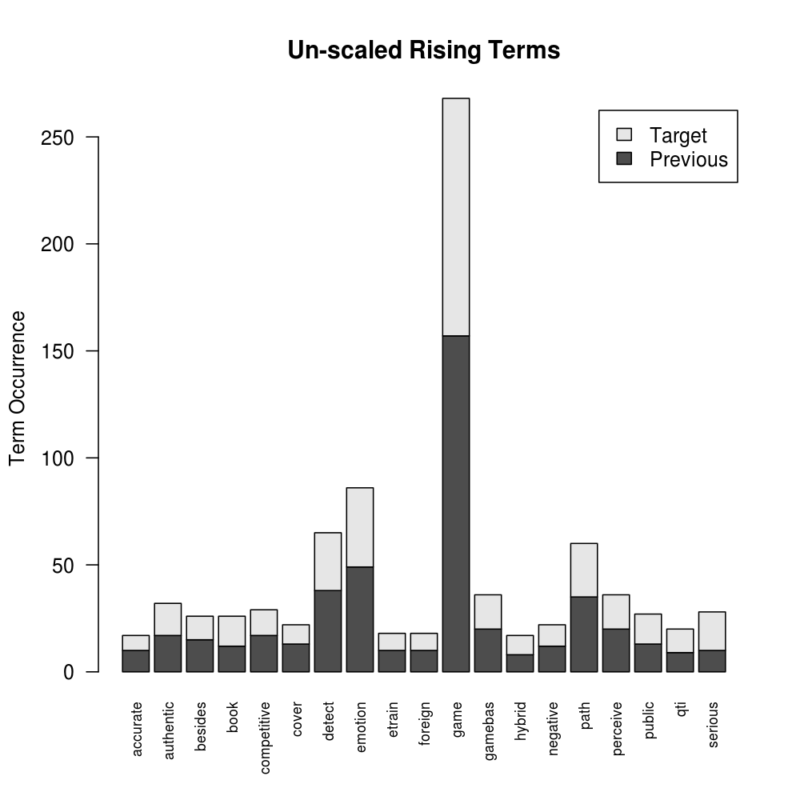
Figure 12: The number of occurences of the Rising Terms in the past and target sets of abstracts.
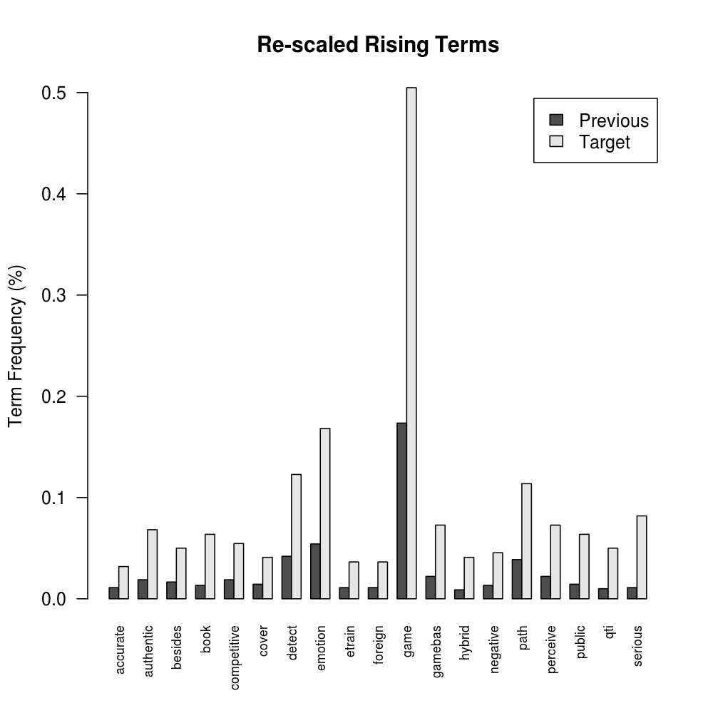
Figure 13: Comparison of the proportion of all stemmed words that are the term in question in both the previous and target year.
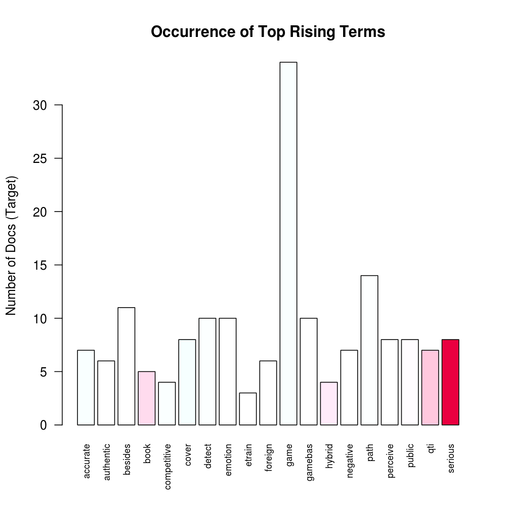
Figure 14: The number of abstracts containing each highlighted Rising Term. The colour coding matches the % rise in the proportion of term occurrence. A Term that appears in a large number of abstracts is likely to be a stronger indication of a new trend that a Term that is concentrated in a single abstract.
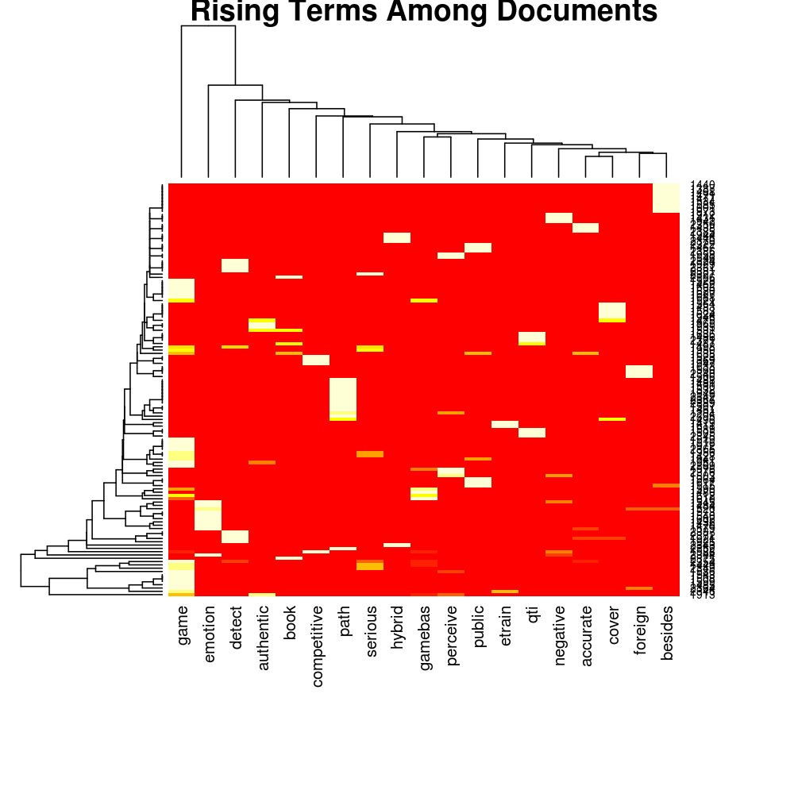
Figure 15: Heatmap to show the distribution of the Rising Terms among abstracts. Red cells indicate the term does not appear. Orange cells indicate a relatively less-frequent term and yellow cells indicate terms that are relatively more frequent
in a given document. This also shows how terms may be clustered according to their occurrence and how abstracts may be clustered according to the Terms within them. The numbers are the identifiers assigned to each paper.
Abstracts Containing the Highlighted Rising Terms
The title of of the paper relating to each abstract containing a given Rising Term is listed, whereas abstracts are only shown for the most rising terms. See the end of this report for information about the source of abstracts and access to the conference proceedings.
Papers Containing "serious"
- Prediction of Players Motivational States Using Electrophysiological Measures during Serious Game Play.
-
Lotfi Derbali, Claude Frasson, ICALT 2010 (id=1428)
This study investigated players' motivation during serious game play. It is based on a theoretical model of motivation. Statistical analysis showed a significant increase of motivation during the game. This study tried to dissect predictors of Players' Motivational States. Multiple linear regression showed statistical significance of specific electrophysiological data. The theta wave in the frontal regions and motivation were positively correlated. High-beta wave in the left-center region was also a significant predictor for high level of motivation. Skin conductance was also a significant predictor for motivation. However, we could not find a significant correlation between players' motivation and their heart rate responses.
- SeGAE: A Serious Game Authoring Environment.
-
Amel Yessad, Jean-Marc Labat, François Kermorvant, ICALT 2010 (id=1449)
Game-based learning or serious game is becoming an important trend in e-learning research area because it seems address several typical e-learning problems such as high dropout rates due to frustration and the lack of motivation to continue studying and the cognitive overload of the learner. However, an important problem of serious games is the difficulty for instructors to adapt the storyboard, the scripts and the game levels of the videogame to new pedagogical objectives once the game development is achieved. This paper presents SeGAE, an author-friendly environment that offers to instructors a set of editors in order to modify the game design by defining new characters, objectives, victory conditions, authorised actions among other objects in the serious games even after the development stage. Particularly, we apply our authoring approach on Blossom Flowers, a serious game developed by Ktm Advance. This paper presents SeGAE, an author-friendly environment that offers to instructors a set of editors in order to modify the game design by defining new characters, objectives, victory conditions, authorised actions among other objects in the serious games even after the development stage. Particularly, we apply our authoring approach on Blossom Flowers, a serious game developed by Ktm Advance.
- Playing Games on the Screen: Adapting Mouse Interaction at Early Ages.
-
Juan Enrique Agudo, Héctor Sánchez, Mercedes Rico, ICALT 2010 (id=1498)
Technology is changing the way today's children learn. Based on our experience in the development of educational software for children, it is our belief that computer interaction should consider the factors that affect children's cognitive abilities and take an active part in the realm of the methodological process of hypermedia design. Departing from the results of a preliminary study with pre-school children, serious difficulties regarding mouse interaction when playing computer games are detected, mainly in the movements requiring more complex psychomotor abilities, such as double click and interactions leading to dragging the cursor. The evaluation reports on the need to adapt the mouse interaction to children's cognitive development, from point-and-click to drag-and-drop, and the suitability of introducing intermediate variations adapted to young learners' needs.
- Disaster Readiness through Education - Training Soft Skills to Crisis Units by Means of Serious Games in Virtual Environments
-
Nina Haferkamp and Nicole C. Krämer, ECTEL 2010 (id=1950)
The training of soft skills in organizational settings has become very important for an effective communicative exchange between members of staff. Especially in companies where the line of communication has to be fast and unmistakable, e.g. in crisis management units, the regular training of communication skills is therefore indispensable. The DREAD-ED project proposes a technology-based teaching methodology to meet these needs. The methodology provides a serious game which enables its users to train soft skills in a virtual environment under safe conditions. The current paper presents the results of two trials conducted with crisis managers and university students.
- Supporting Reflection in an Immersive 3D Learning Environment Based on Role-Play
-
Nils Malzahn, Hanno Buhmes, Sabrina Ziebarth and H. Ulrich Hoppe, ECTEL 2010 (id=1956)
This paper presents a framework for creating and conducting serious games. It focuses on role-playing game based learning scenarios in 3D environments. The feasibility of the presented approach is demonstrated by a training scenario for apprenticeship job interviews. Based on the assumption that reflection phases as an important part of successful learning processes are to be adequately supported, we show how phases of immersion during the role-play are connected to separate phases of reflection.
- Evaluation of Learning Outcomes
-
Sylvia Encheva, ICWL 2010 (id=2327)
A lot of research has been done with respect to automated evaluation of students’ knowledge. Learning outcomes have been of serious interest to many research communities as well. In this article we apply dominance relations in rough sets approximations for assessing knowledge obtained in active learning environments.
- Collaborative Learning by Means of Multiplayer Serious Games
-
Viktor Wendel, Felix Hertin, Stefan Göbel and Ralf Steinmetz, ICWL 2010 (id=2349)
The field of collaborative learning has been researched for many years with a focus on evaluation of the circumstances under which collaborative learning provides better learning effectiveness compared to individual learning. Traditional collaborative learning has been taking place as group work or discussions in a class. Recently, Serious Games for learning and Digital Educational Games (DEGs) have been established as a promising alternative to the traditional one-to-many teaching as it is still standard in today’s classrooms and with the uprising technology of Multiplayer Online Games (MOGs), new ways of collaborative learning are possible. In this paper we examine various chances and challenges for collaborative learning which arise by the use of Multiplayer Serious Games. Section[1] motivates this work, followed by a description of some important aspects of MOGs and collaboration in Section[2]. In Section[3] the concept of collaborative learning is explained and important concepts and methods for a collaborative game design are analyzed and discussed in Section[4], using some examples of collaborative Serious Games. Finally, we briefly introduce our own approach of a collaborative Serious MOG in Section[5]. In Section[6] the results are summarized and further work is pointed out.
- Using the Petri Nets for the Learner Assessment in Serious Games
-
Amel Yessad, Pradeepa Thomas, Bruno Capdevila and Jean-Marc Labat, ICWL 2010 (id=2354)
Game-based learning or serious games is becoming an important trend in the e-learning research area and seems address several typical e-learning problems such as high dropout rates, due to the lack of motivation to continue studying. In serious games, it is very hard to define and mix the learning situations with the game characteristics, and to integrate an assessment and guidance process of the learner without disturbing the game progress and maintain the intrinsic characteristics of the video game: fun, player motivation, immersion and interaction. In this paper, we consider the serious game as an asynchronous and concurrent system, and we propose an approach based on a Petri net to assess learners and detect misconceptions. In the game design stage, a discussion between domain experts, learning experts, and game designers is engaged in order to identify the actions in the game that imply knowledge acquisition and allow achieving the learning objectives of levels. Therefore, in our approach, the Petri net models only game actions allowing the learner to acquire knowledge. We use the reachability graph of the Petri net to track the learner in order to detect, in real time, the learner’s misconceptions, improve learner assessment and provide an accurate feed back for both the learner and the instructor.
Papers Containing "qti"
- E-learning Authoring with Docbook and SMIL.
-
Alberto González Téllez, ICALT 2010 (id=1486)
E-learning content material can be classified as text and multimedia. A common practice is to use text as backbone and multimedia as components to enrich the otherwise text-and-still-images-only documents. Nowadays e-learning content delivery over learning management systems (LMS) is becoming a common practice in academic institutions. Common authoring tools like office suites are good to generate printing format but at present they do not generate easily the interoperable standards used today in LMS (i.e. SCORM, IMS CP and IMS QTI). We propose a user friendly authoring environment to produce IMS interoperable formats, able to be imported in our Sakai based LMS named PoliformaT. We follow the text-based-multimedia-enriched document paradigm using Docbook for text and SMIL for multimedia composition. Both Docbook and SMIL are independent and XML compliant. Docbook's simple and well structured markup simplifies interoperability with other XML compliant languages, particularly those related to e-learning. In the multimedia side SMIL offers an open and flexible composition capability to author multimedia content for e-learning. The problem that we face with the proposed approaches is the lack of friendly and productive authoring tools. This is the issue we intend to contribute to with this work.
- An Online Arabic Learning Environment Based on IMS-QTI.
-
Abdelkader Abdelkarim, Dalila Souilem Boumisa, Rafik Braham, ICALT 2010 (id=1487)
E-Learning is the modern model of education, transferring the classical text books to an electronic medium giving us the opportunity to learn almost anytime, anywhere. It has become an important stream of education in present and has a promising future. Successful e-learning applications for efficient language teaching require various corpora and Natural Language Processing (NLP) technologies. This paper deals with the application of NLP technology and IMS QTI standard to construct an online Arabic learning environment for learners. Our work is an integration of two areas: linguistics computer science. It focuses on three objectives: the development of linguistics resources and tools for the automatic processing of Arabic, the building of ontology for the Arabic language and the application and extension of the IMS-QTI for Arabic grammar as well.
- A Formative eAssessment Co-Design Case Study.
-
David A. Bacigalupo, W. I. Warburton, E. A. Draffan, Pei Zhang, Lester Gilbert, Gary B. Wills, ICALT 2010 (id=1505)
Formative eAssessment can be very helpful in providing high quality higher education assignments. However, there are obstacles restricting the uptake of formative eAssessment in higher education including both cultural and technical issues. When a university is encouraging the uptake of formative eAssessment internally it is useful to have case studies from academic schools detailing how academics enthusiastic about formative eAssessment have used it in their modules. It is particularly helpful if these case studies document: i.) the principle obstacles that these champions had to deal with, ii.) a cooperative-design process through which these obstacles have been dealt with by the champions (with assistance from e.g. learning technologists), and iii.) an evaluation of the effectiveness of the resulting formative eAssessments. However there is a shortage of such real-world long-term case studies. This paper helps fill this gap in the literature by describing the case of a Modern Languages module within a Russell Group university (Southampton). The formative eAssessment solution resulting from the case study utilises our QTI, mobile QTI, accessibility, and web 2.0 tools and can be positioned at the cutting edge of formative eAssessment practice. We have evaluated this with undergraduate student volunteers from Spanish modules and received positive feedback.
- dinsEditor: A Browser Extension for QTI-Compliant Assessment Item Authoring.
-
Sungjae Han, Jinjoo Kim, Youngseok Lee, Jaehyuk Cha, Byung-Uk Choi, ICALT 2010 (id=1589)
Many users want to author assessment items directly from web pages. Existing authoring tools usually use the clipboard to perform the `select-copy-paste' operation on web pages. Because web pages have complicated structures and can include invisible resources, the clipboard-based approach has several limitations: 1) it cannot keep the resource in its original form, 2) it cannot select invisible resources, and 3) it may have to select unnecessary resources. To overcome these limitations, this paper proposes dinsEditor as a browser-based approach for assessment item authoring tools. It is offered as a browser extension that allows the authoring environment to make full use of the resources of web pages and to utilize the exact resources user want. It enables web resources to be maintained in their original form during the assessment item authoring process. The assessment items created through dinsEditor observe the QTI standard by using the QTI Translator.
- Tool for Generation IMS-QTI v2.1 Files with Java Server Faces.
-
Antonio García-Cabot, Roberto Barchino, Luis de Marcos, Eva García, José Ramón Hilera, José María Gutiérrez, Salvador Otón, José-Javier Martínez, José Antonio Gutiérrez, ICALT 2010 (id=1636)
This paper presents a web tool that uses Java Server Faces to design questions graphically, to test the outcome in a learning environment and to export them using the QTI v2.1 specification in order to ensure interoperability between different learning systems.
- Delivering QTI Self-tests to Personal Learning Environments Using Wookie Widgets
-
Vladimir Tomberg, Raido Kuli, Mart Laanpere and Peeter Normak, ICWL 2010 (id=2345)
Although online tests are a quite popular form of assessing learning outcomes in traditional Learning Management Systems, it is quite difficult to deliver the wealth of existing re-usable QTI-compliant tests into Web 2.0 style Personal Learning Environments. This paper addresses both pedagogical scenarios and technical solution for using QTI self-tests in blogs, personal e-portfolios and social media platforms. The empirical part describes the development of the original QTI Assessment Proxy Service and QTI self-test player based on the Wookie widget engine.
- Modelling Text File Evaluation Processes
-
José Paulo Leal and Ricardo Queirós, ICWL 2010 (id=2371)
Text file evaluation is an emergent topic in e-learning that responds to the shortcomings of the assessment based on questions with predefined answers. Questions with predefined answers are formalized in languages such as IMS Question & Test Interoperability Specification (QTI) and supported by many e-learning systems. Complex evaluation domains justify the development of specialized evaluators that participate in several business processes. The goal of this paper is to formalize the concept of a text file evaluation in the scope of the E-Framework – a service oriented framework for development of e-learning systems maintained by a community of practice. The contribution includes an abstract service type and a service usage model. The former describes the generic capabilities of a text file evaluation service. The later is a business process involving a set of services such as repositories of learning objects and learning management systems.
Papers Containing "book"
- An Online Arabic Learning Environment Based on IMS-QTI.
-
Abdelkader Abdelkarim, Dalila Souilem Boumisa, Rafik Braham, ICALT 2010 (id=1487)
E-Learning is the modern model of education, transferring the classical text books to an electronic medium giving us the opportunity to learn almost anytime, anywhere. It has become an important stream of education in present and has a promising future. Successful e-learning applications for efficient language teaching require various corpora and Natural Language Processing (NLP) technologies. This paper deals with the application of NLP technology and IMS QTI standard to construct an online Arabic learning environment for learners. Our work is an integration of two areas: linguistics computer science. It focuses on three objectives: the development of linguistics resources and tools for the automatic processing of Arabic, the building of ontology for the Arabic language and the application and extension of the IMS-QTI for Arabic grammar as well.
- An Audio Book Platform for Early EFL Oral Reading Fluency.
-
Kuo-Ping Liu, Cheng-Chung Liu, Chih-Hsin Huang, Kuo-Chun Hung, Chia-Jung Chang, ICALT 2010 (id=1531)
Oral reading fluency is essential to overall reading achievements and repeat reading has been found to be an effective strategy for oral reading fluency. Choral reading is the most authentic use of repeated readings in the EFL primary grades. However, teachers have neither sufficient time nor adequate expertise to deal with non-fluent readers. Hence, challenges with oral reading fluency and motivation have long been considered a common characteristic for teacher and students. Hence, this study proposed a one-to-one Audio Book Platform incorporating repeated reading strategy and record-play function. An intact sample of two classes of the sixth graders in Taiwan were randomly assigned and treated as experimental group and control (choral reading) group. An empirical study is conducted to assess whether there are differences in the effectiveness of enhancing oral reading fluency. A questionnaire elicited information concerning motivation included (1) anxiety, (2) intrinsic goal orientation, (3) extrinsic goal orientation, (4) task value, and (5) self-regulation is also conducted. Although no significant difference was uncovered in oral reading fluency and motivation, the findings could serve as some general principles for researchers who would like to experiment with one-to-one repeated reading in similar contexts.
- Collaborative Development of an Augmented Reality Application for Digestive and Circulatory Systems Teaching.
-
David C. Pérez López, Manuel Contero, Mariano Alcañiz Raya, ICALT 2010 (id=1635)
Augmented Reality (AR) appears as a promising technology to improve students motivation and interest and support the learning and teaching process in educational contexts. We present the collaborative development of an AR application to support the teaching of the digestive and circulatory systems. We developed this system with the support of a private Spanish school. The main objective of the application is to show the student in primary school, in the most accurate way, digestive and circulatory systems. By other hand, we also develop our own AR library, HUMANAR, in order to ensure the integration of AR into our game engine and to overcome some drawbacks present in some public libraries. Moreover, our system provides several advantages over the traditional learning as books, videos or practice with animal organs.
- Building the Association Catalog for Books Based on Association Linked Network
-
Xiao Wei, Wei Wu, Jiyan Xu and Zheng Xu, ICWL 2010 (id=2375)
Current library catalogs, such as author catalog, title catalog and so on, index the books from one aspect but cannot reflect the relations among relevant book classifications. In this paper, the association relations among book classifications are mined from a large amount of borrowing logs of readers. Based on the mined relations, the Association Linked Network of book classifications is built to present the association relations among book classifications. A new type of library catalog named Association Catalog for books (ACB) is proposed based on the association linked network of book classifications. By means of ACB readers can also get the books about the related disciplines, which are closely related to this book. The experiment results show that ACB can help the readers retrieve the related books in interdisciplinary learning and researching.
- Semantic Annotation of Educational Resources through Linked Data
-
Estefanía Otero-García, Juan C. Vidal, Manuel Lama, Alberto Bugarín and José E. Domenech, ICWL 2010 (id=2396)
In this paper a context-based algorithm to semantically annotate e-learning contents is presented. This algorithm explores the DBpedia graph and uses both syntactic and semantic analysis techniques to identify the RDF triples which annotate the relevant terms that characterize the educational content. This algorithm has been applied to annotate learning fruits which are learning pills presented as web books that provide links to access to complementary and relevant information about the course.This work was supported by the Ministerio de Educación y Ciencia and the Xunta de Galicia under the projects TSI2007-65677C02-02 and 09SIN065E respectively.
Papers Containing "hybrid"
- An Evaluation of Diagnosis in a Learning Environment for Object-Oriented Modeling.
-
Ludovic Auxepaules, Dominique Py, ICALT 2010 (id=1446)
This paper reports the first evaluation of a diagnostic module, called ACDC (Automatic Class Diagrams Comparator) since its integration into Diagram, a learning environment for UML class diagrams. ACDC is an hybrid matcher that compares the student diagram with a reference diagram and tries to match them. It produces a list of structural and content differences between these two diagrams. These differences are then analysed by the pedagogical component of Diagram for producing appropriate feedbacks. The evaluation of ACDC system was conducted using diagnosis traces and student diagrams collected in a Diagram experimentation during Fall 2008 with students in a UML course. For evaluating the quality of ACDC, we use four match quality measures: Precision, Recall, F-Measure and Overall. The evaluation results show that the diagnosis are fairly well but requires to be improved in some specific situations.
- Recommending Learning Objects According to a Teachers’ Contex Model
-
Jorge Bozo, Rosa Alarcón and Sebastian Iribarra, ECTEL 2010 (id=1944)
Several online repositories make available learning resources known as Learning Objects (LOs), and tasks such as identifying useful metadata, diminishing the annotation effort, and facilitating LOs discovery and retrieval, remain still as open challenges. Advanced searching techniques such as recommending systems have been studied to address these issues, though mainly focused on students. We focus on teachers and exploit their context in order to identify metadata that describes LOs content. Teachers’ profiles consider also such metadata in a hybrid approach for recommending LOs to teachers and instructors.
- Improving Hybrid Learning of Physical Education by Video Review
-
Yajun Pang, ICWL 2010 (id=2343)
Hybrid Learning is becoming one of important applications by integrating e-learning and traditional face-to-face instruction together. As an introduction to the reader the challenges in hybrid learning of physical education and architecture of Physical Education Hybrid Learning Platform (PEHLP) are firstly provided. The main character of PEHLP is using video instead of textual information as learning material. Then Video Review Module (VRM) is presented. Through the annotation composing functionality of VRM, the teacher can review the student’s actions video, pick out the wrong actions and add still annotations, which for now are either text or specific graphic symbols or audio-recording. And through the annotation viewing/browsing functionality, the student can watch annotated video, find out mistakes and get instructions. In order to control over bandwidths and promote video annotation, the geometry primitives of video annotation graphic symbols are presented in Geometry Primitive Language (GPL) in XML. The experiment shows that the annotation data is 0.37% of the annotation data in JPG format. The user case of this paper shows that 80.9% out of students think that the video review can afford the hybrid learning of physical education, but only 66.7% of them think the hybrid learning instruction mode can attain the same teaching effect in contrasted F2F instruction mode. So we suggest that the proportion of e-learning should be less than 60% in hybrid learning of physical education course.
- Hybrid Filtering-Based Personalized Recommender System for Revitalization of Jeju Water Industry
-
Jungwon Cho, Eui-young Kang, Hanil Kim, Hyungchul Kim and Youngseok Lee, et al., ICWL 2010 (id=2370)
Information filtering is one of the core technologies in a recommender system for personalized services. Each filtering technology has such shortcomings as new user problems and sparsity. Moreover, a recommender system dependent on items decreases reusability. In order to solve these problems, we developed a personalized recommender framework with hybrid filtering. This framework consists of reusable and flexible modules for recommended items. Further, this framework improves the productivity of programming. As an application of this framework, we implemented a personalized tourist recommender system and analyzed it. Also, we applied the system to Jeju beer recommender system. The results show the performance of the framework proposed in this paper.
Papers Containing "public"
- Active Sharing of Contextual Learning Experiences among Users in Personal Learning Environments Using a Peer-to-Peer Network.
-
Amel Bouzeghoub, Ngoc-Kien Do, ICALT 2010 (id=1467)
- 3D Digital Simulations in Participative Design of the Boulevard in Putrajaya: Implications on Academic, Organizational, and Informal Learning.
-
Rashidah Ab. Rahman, ICALT 2010 (id=1515)
- Increasing Students In-Class Engagement through Public Commenting: An Exploratory Study.
-
Honglu Du, Hao Jiang, Mary Beth Rosson, John M. Carroll, ICALT 2010 (id=1617)
- Collaborative Development of an Augmented Reality Application for Digestive and Circulatory Systems Teaching.
-
David C. Pérez López, Manuel Contero, Mariano Alcañiz Raya, ICALT 2010 (id=1635)
- Audience Interactivity as Leverage for Effective Learning in Gaming Environments for Dome Theaters
-
Panagiotis Apostolellis and Thanasis Daradoumis, ECTEL 2010 (id=1941)
- Components of a Research 2.0 Infrastructure
-
Thomas Daniel Ullmann, Fridolin Wild, Peter Scott, Erik Duval and Bram Vandeputte, et al., ECTEL 2010 (id=1964)
- Assisting the Authoring Process of IMS-LD Using Web Parsing Technique
-
Ka-shing Chan and Lam-for Kwok, ICWL 2010 (id=2322)
- Internet GIS and System Dynamic Modeling in Urban Public Safety and Security Studies: A Conceptual Framework
-
Danlin Yu and Jingyuan Yin, ICWL 2010 (id=2386)
Papers Containing "authentic"
- Web Tests in LMS Using Fingerprint Identification.
-
Charo Gil, Manuel Castro, Mudasser F. Wyne, Russ Meier, ICALT 2010 (id=1475)
- An Audio Book Platform for Early EFL Oral Reading Fluency.
-
Kuo-Ping Liu, Cheng-Chung Liu, Chih-Hsin Huang, Kuo-Chun Hung, Chia-Jung Chang, ICALT 2010 (id=1531)
- Authenticity in Learning Game: How It Is Designed and Perceived
-
Celso Gonçalves, Marie-Caroline Croset, Muriel Ney, Nicolas Balacheff and Jean-Luc Bosson, ECTEL 2010 (id=1913)
- Exploring Mediums of Pedagogical Support in an across Contexts Mobile Learning Activity
-
Jalal Nouri, Johan Eliasson, Fredrik Rutz and Robert Ramberg, ECTEL 2010 (id=1935)
- Ambient Displays and Game Design Patterns
-
Sebastian Kelle, Dirk Börner, Marco Kalz and Marcus Specht, ECTEL 2010 (id=1951)
- Exploring the Benefits of Open Standard Initiatives for Supporting Inquiry-Based Science Learning
-
Bahtijar Vogel, Arianit Kurti, Daniel Spikol and Marcelo Milrad, ECTEL 2010 (id=1965)
Papers Containing "negative"
- Students' Perceptions of the Factors Leading to Unsuccessful Group Collaboration.
-
Shuangyan Liu, Mike Joy, Nathan Griffiths, ICALT 2010 (id=1431)
- Using Feedback Tags and Sentiment Analysis to Generate Sharable Learning Resources Investigating Automated Sentiment Analysis of Feedback Tags in a Programming Course.
-
Stephen Cummins, Liz Burd, Andrew Hatch, ICALT 2010 (id=1503)
- Design and Evaluation of an Affective Interface of the E-learning Systems.
-
Hui-Chun Chuang, Chin-Yeh Wang, Gwo-Dong Chen, Chen-Chung Liu, Baw-Jhiune Liu, ICALT 2010 (id=1545)
- Learning by Pet-training Competition: Alleviating Negative Influences of Direction Competition by Training Pets to Compete in Game-Based Environments.
-
Zhi-Hong Chen, Calvin C. Y. Liao, Tak-Wai Chan, ICALT 2010 (id=1588)
- Content, Social, and Metacognitive Statements: An Empirical Study Comparing Human-Human and Human-Computer Tutorial Dialogue
-
Myroslava O. Dzikovska, Natalie B. Steinhauser, Johanna D. Moore, Gwendolyn E. Campbell and Katherine M. Harrison, et al., ECTEL 2010 (id=1912)
- Free-Riding in Collaborative Diagrams Drawing
-
Furio Belgiorno, Ilaria Manno, Giuseppina Palmieri and Vittorio Scarano, ECTEL 2010 (id=1942)
- An Emotion Regulation Model in an E-Learning Environment
-
Jiwei Qin, Qinghua Zheng, Haifei Li and Huisan Zhang, ICWL 2010 (id=2344)
Papers Containing "etrain"
- Technology-enhanced Training for All: Evaluation Results from the Use of the e-Access2Learn Framework.
-
Demetrios G. Sampson, Panayiotis Zervas, ICALT 2010 (id=1419)
- Pedagogical Deigns and Principles in Vocational Training: The Case of ELEVATE.
-
Iraklis Paraskakis, Andreas Konstantinidis, Ikaros Tsantekidis, ICALT 2010 (id=1611)
- e-Training DS: An Authoring Tool for Integrating Portable Computer Science Games in e-Learning
-
Roberto Tornero, Javier Torrente, Pablo Moreno-Ger and Baltasar Fernández Manjón, ICWL 2010 (id=2346)
Papers Containing "foreign"
- A Perspective on Listening Comprehension: How ICT Enable a Chinese as a Foreign Language (CFL) Learner to Achieve Learning Metacognition.
-
Mei Jen Audrey Shih, Jie-Chi Yang, ICALT 2010 (id=1506)
- Emotional Strategies for Vocabulary Learning.
-
Ramla Ghali, Claude Frasson, ICALT 2010 (id=1520)
- An Integrated Model of Synchronous Cyber Assessment and Blended Learning Environment for Foreign Language Learners.
-
Sabrina Leone, Tommaso Leo, Nian-Shing Chen, ICALT 2010 (id=1560)
- Taking Advantage of Web 2.0 and Video Resources for Developing a Social Service: Babelium Project, the Web Community for Foreign Language Speaking Practice.
-
Silvia Sanz-Santamaría, Juan Antonio Pereira Varela, Julián Gutiérrez Serrano, ICALT 2010 (id=1633)
- Supporting Active Learning in CLIL through Collaborative Search
-
Ivana Marenzi, Rita Kupetz, Wolfgang Nejdl and Sergej Zerr, ICWL 2010 (id=2340)
- Educational Game Design for Teaching Chinese as a Foreign Language by Effective Learning Environment, Flow, Motivation
-
Yi Zhang, Liming Shan and Shixiang Li, ICWL 2010 (id=2364)
Papers Containing "gamebas"
- SeGAE: A Serious Game Authoring Environment.
-
Amel Yessad, Jean-Marc Labat, François Kermorvant, ICALT 2010 (id=1449)
- Spatializing Social Practices in Mobile Game-Based Learning.
-
Susan Gwee, Yam San Chee, Ek Ming Tan, ICALT 2010 (id=1480)
- Personalized Game Based Mobile Learning to Assist High School Students with Mathematics.
-
Vani Kalloo, Kinshuk, Permanand Mohan, ICALT 2010 (id=1521)
- An Analysis of Students' Intention to Use Ubiquitous Video Game-Based Learning System.
-
Chun-Yi Shen, Han-Bin Chang, Wen-Chih Chang, Te-Hua Wang, ICALT 2010 (id=1576)
- Learning by Pet-training Competition: Alleviating Negative Influences of Direction Competition by Training Pets to Compete in Game-Based Environments.
-
Zhi-Hong Chen, Calvin C. Y. Liao, Tak-Wai Chan, ICALT 2010 (id=1588)
- Designing Game-Based Learning Framework - A Motivation-Driven Approach.
-
Kuo-chen Li, Jia-Chi Huang, Jia-Sheng Heh, Cheng-Ting Chen, Hui-Chih Wang, Shiou-Wen Yeh, ICALT 2010 (id=1596)
- Pilot Study of Past Decade Game-Based Learning Journal Papers Survey from the Technology Perspective.
-
Ben Chang, ICALT 2010 (id=1610)
- Using Game Quests to Incorporate Learning Tasks within a Virtual World.
-
Zhi-Hong Chen, Tak-Wai Chan, ICALT 2010 (id=1612)
- Authenticity in Learning Game: How It Is Designed and Perceived
-
Celso Gonçalves, Marie-Caroline Croset, Muriel Ney, Nicolas Balacheff and Jean-Luc Bosson, ECTEL 2010 (id=1913)
- Using the Petri Nets for the Learner Assessment in Serious Games
-
Amel Yessad, Pradeepa Thomas, Bruno Capdevila and Jean-Marc Labat, ICWL 2010 (id=2354)
Papers Containing "perceive"
- Relationships between E-Learning Systems and Learning Outcomes: A Path Analysis Model.
-
Sean Eom, ICALT 2010 (id=1204)
- Using Feedback Tags and Sentiment Analysis to Generate Sharable Learning Resources Investigating Automated Sentiment Analysis of Feedback Tags in a Programming Course.
-
Stephen Cummins, Liz Burd, Andrew Hatch, ICALT 2010 (id=1503)
- Perceptions and Illusions about Adaptivity and Their Effects on Learning Outcomes.
-
Mieke Vandewaetere, Geraldine Clarebout, ICALT 2010 (id=1546)
- An Analysis of Students' Intention to Use Ubiquitous Video Game-Based Learning System.
-
Chun-Yi Shen, Han-Bin Chang, Wen-Chih Chang, Te-Hua Wang, ICALT 2010 (id=1576)
- Tangible Cubes Used as the User Interface in an Augmented Reality Game for Edutainment.
-
Carmen M. Juan, Giacomo Toffetti, Francisco Abad, Juan Cano, ICALT 2010 (id=1586)
- Authenticity in Learning Game: How It Is Designed and Perceived
-
Celso Gonçalves, Marie-Caroline Croset, Muriel Ney, Nicolas Balacheff and Jean-Luc Bosson, ECTEL 2010 (id=1913)
- GVIS: A Facility for Adaptively Mashing Up and Representing Open Learner Models
-
Luca Mazzola and Riccardo Mazza, ECTEL 2010 (id=1958)
- Factors Affecting Lifelong Learners’ Intention to Continue Using E-Learning Website: An Empirical Study
-
Hsiu-Li Liao, Su-Houn Liu, Shih-Ming Pi and You-Jie Chou, ICWL 2010 (id=2376)
Papers Containing "emotion"
- Modelling Affect in Learning Environments - Motivation and Methods.
-
Shazia Afzal, Peter Robinson, ICALT 2010 (id=1432)
- Students Attitude and Learning Effectiveness of Emotional Agents.
-
Konstantina Chatzara, C. J. Karagiannidis, Demosthenes Stamatis, ICALT 2010 (id=1470)
- Monitoring Learning Experiences and Styles: The Socio-emotional Level.
-
Chiara Spadavecchia, Carlo Giovannella, ICALT 2010 (id=1484)
- Emotional Strategies for Vocabulary Learning.
-
Ramla Ghali, Claude Frasson, ICALT 2010 (id=1520)
- Self-Esteem Conditioning for Learning Conditioning.
-
Imene Jraidi, Maher Chaouachi, Claude Frasson, ICALT 2010 (id=1540)
- Design and Evaluation of an Affective Interface of the E-learning Systems.
-
Hui-Chun Chuang, Chin-Yeh Wang, Gwo-Dong Chen, Chen-Chung Liu, Baw-Jhiune Liu, ICALT 2010 (id=1545)
- A Preliminary Study on Learners Physiological Measurements in Educational Hypermedia.
-
Nikos Tsianos, Panagiotis Germanakos, Zacharias Lekkas, Anna Saliarou, Costas Mourlas, George Samaras, ICALT 2010 (id=1573)
- The Emotional Machine: A Machine Learning Approach to Online Prediction of User's Emotion and Intensity.
-
Amine Trabelsi, Claude Frasson, ICALT 2010 (id=1579)
- Representing Contextual Features of Subtitles in an Educational Context.
-
Marion A. Hersh, James Ohene-Djan, ICALT 2010 (id=1602)
- An Emotion Regulation Model in an E-Learning Environment
-
Jiwei Qin, Qinghua Zheng, Haifei Li and Huisan Zhang, ICWL 2010 (id=2344)
Papers Containing "besides"
- Identifying Animals with Dynamic Location-aware and Semantic Hierarchy-Based Image Browsing for Different Cognitive Style Learners.
-
Dunwei Wen, Ming-Chi Liu, Yueh-Min Huang, Kinshuk, Pi-Hsia Hung, ICALT 2010 (id=1387)
- A Flexible Mechanism for Providing Adaptivity Based on Learning Styles in Learning Management Systems.
-
Sabine Graf, Kinshuk, Cindy Ives, ICALT 2010 (id=1440)
- An Approach for Designing and Implementing a Computerized Adaptive Testing Tool for Applicants with Disabilities.
-
Monjia Balloumi, Mohsen Laâbidi, Mohamed Jemni, ICALT 2010 (id=1468)
- A Proposal to Improve the Simple Query Interface (SQI) of Learning Objects Repositories.
-
Salvador Otón, José Ramón Hilera, Eva García, Antonio García-Cabot, Luis de Marcos, Antonio Ortiz, José Antonio Gutiérrez de Mesa, José-Javier Martínez, José María Gutiérrez, Roberto Barchino, ICALT 2010 (id=1471)
- Integration of External Tools in Virtual Learning Environments: Main Design Issues and Alternatives.
-
Carlos Alario-Hoyos, Juan I. Asensio-Pérez, Miguel L. Bote-Lorenzo, Eduardo Gómez-Sánchez, Guillermo Vega-Gorgojo, Adolfo Ruiz-Calleja, ICALT 2010 (id=1477)
- 3D Digital Simulations in Participative Design of the Boulevard in Putrajaya: Implications on Academic, Organizational, and Informal Learning.
-
Rashidah Ab. Rahman, ICALT 2010 (id=1515)
- Emotional Strategies for Vocabulary Learning.
-
Ramla Ghali, Claude Frasson, ICALT 2010 (id=1520)
- Smart Timetable Plate for Classroom.
-
Yuan-Chih Yu, Shing-chern D. You, Dwen-Ren Tsai, ICALT 2010 (id=1534)
- Re-engineering of Pedagogical Scenarios Using the Data Combination Language and Usage Tracking Language.
-
Diem Pham Thi Ngoc, Sébastien Iksal, Christophe Choquet, ICALT 2010 (id=1585)
- Using Tangible Learning Companions in English Education.
-
Yi Hsuan Wang, Shelley Shwu-Ching Young, Jyh-Shing Roger Jang, ICALT 2010 (id=1601)
- TAO – A Versatile and Open Platform for Technology-Based Assessment
-
Eric Ras, Judith Swietlik, Patrick Plichart and Thibaud Latour, ECTEL 2010 (id=1973)
Papers Containing "path"
- Relationships between E-Learning Systems and Learning Outcomes: A Path Analysis Model.
-
Sean Eom, ICALT 2010 (id=1204)
- How to See Training Paths in Learning Management Systems?
-
Philippe Teutsch, Jean-François Bourdet, ICALT 2010 (id=1461)
- Personalizing Learning Processes by Data Mining.
-
Rainer Knauf, Yoshitaka Sakurai, Kouhei Takada, Setsuo Tsuruta, ICALT 2010 (id=1481)
- Kernel for a Semantic Learning Platform with Adapted Suggestions.
-
Ioan Szilagyi, Radu Balog-Crisan, Ioan Roxin, ICALT 2010 (id=1488)
- From Mini Rover Programs to Algebraic Expressions.
-
G. Barbara Demo, ICALT 2010 (id=1496)
- An Integrated Approach to Learning Object Sequencing.
-
Battur Tugsgerel, Rachid Anane, Georgios K. Theodoropoulos, ICALT 2010 (id=1507)
- A New Approach Based on Modelled Traces to Compute Collaborative and Individual Indicators Human Interaction.
-
Tarek Djouad, Alain Mille, Christophe Reffay, Mohamed Benmohammed, ICALT 2010 (id=1530)
- Enabling the Use of Real World Objects to Improve Learning.
-
Katja Niemann, Martin Wolpers, ICALT 2010 (id=1532)
- An Interoperable ePortfolio Tool for All
-
Fabrizio Giorgini, ECTEL 2010 (id=1949)
- Extending Learning Objects by Means of Social Networking
-
Julià Minguillón, M. Elena Rodríguez and Jordi Conesa, ICWL 2010 (id=2342)
- An Open Model for Learning Path Construction
-
Fan Yang, Frederick W. B. Li and Rynson W. H. Lau, ICWL 2010 (id=2352)
- Story Telling for Cultural Knowledge Sharing
-
Cat Kutay and Peter Ho, ICWL 2010 (id=2367)
- A Knowledge-Driven Approach to Web-Based Learning for Formal Algorithm Development
-
Yujun Zheng, Haihe Shi and Jinyun Xue, ICWL 2010 (id=2389)
- Groupized Learning Path Discovery Based on Member Profile
-
Xiuzhen Feng, Haoran Xie, Yang Peng, Wei Chen and Huamei Sun, ICWL 2010 (id=2395)
Papers Containing "detect"
- Playing Games on the Screen: Adapting Mouse Interaction at Early Ages.
-
Juan Enrique Agudo, Héctor Sánchez, Mercedes Rico, ICALT 2010 (id=1498)
- Automatic Detection of Local Reuse
-
Arno Mittelbach, Lasse Lehmann, Christoph Rensing and Ralf Steinmetz, ECTEL 2010 (id=1921)
- Studying the Factors Influencing Automatic User Task Detection on the Computer Desktop
-
Andreas S. Rath, Didier Devaurs and Stefanie N. Lindstaedt, ECTEL 2010 (id=1925)
- Learning from Erroneous Examples: When and How Do Students Benefit from Them?
-
Dimitra Tsovaltzi, Erica Melis, Bruce M. McLaren, Ann-Kristin Meyer and Michael Dietrich, et al., ECTEL 2010 (id=1929)
- An Advanced Learning Environment Aided by Recognition of Multi-modal Social Signals
-
Jingying Chen, Dan Chen, Lizhe Wang and Oliver Lemon, ICWL 2010 (id=2324)
- Gap Detection in Web-Based Adaptive Educational Systems
-
Dominik Jednoralski, Erica Melis, Sergey Sosnovsky and Carsten Ullrich, ICWL 2010 (id=2331)
- Using the Petri Nets for the Learner Assessment in Serious Games
-
Amel Yessad, Pradeepa Thomas, Bruno Capdevila and Jean-Marc Labat, ICWL 2010 (id=2354)
- Duplicate Page Detection Algorithm Based on the Field Characteristic Clustering
-
Feiyue Ye, Junlei Liu, Bing Liu and Kun Chai, ICWL 2010 (id=2372)
- OCL-Based Testing for E-Learning Web Service
-
Jin Liu, Xiaoming Lu, Xiguang Feng and Jianxun Liu, ICWL 2010 (id=2381)
- The Detection of Scene Features in Flickr
-
Chunjie Zhou, Pengfei Dai and Jianxun Liu, ICWL 2010 (id=2387)
Papers Containing "game"
- Prediction of Players Motivational States Using Electrophysiological Measures during Serious Game Play.
-
Lotfi Derbali, Claude Frasson, ICALT 2010 (id=1428)
- SeGAE: A Serious Game Authoring Environment.
-
Amel Yessad, Jean-Marc Labat, François Kermorvant, ICALT 2010 (id=1449)
- Interactive Widgets for Regualtion in Learning Games.
-
Thibault Carron, Jean-Charles Marty, Stephane Talbot, ICALT 2010 (id=1462)
- Learning Words Using Augmented Reality.
-
M. Carmen Juan, Edith Llop, Francisco Abad, Javier Lluch, ICALT 2010 (id=1485)
- Playing Games on the Screen: Adapting Mouse Interaction at Early Ages.
-
Juan Enrique Agudo, Héctor Sánchez, Mercedes Rico, ICALT 2010 (id=1498)
- A Game Based Learning Content for Tutoring in Simplifying Boolean Functions.
-
Yong Suk Choi, ICALT 2010 (id=1508)
- Modelling Computer Game Based Educational Experience for Teaching Children about Emergencies.
-
Mario Rafael Ruiz Vargas, Telmo Zarraonandia, Paloma Díaz, Ignacio Aedo, ICALT 2010 (id=1516)
- Learning Biology with the Animated Agent in Game Based Learning Environment.
-
Hsin I Yung, ICALT 2010 (id=1519)
- Personalized Game Based Mobile Learning to Assist High School Students with Mathematics.
-
Vani Kalloo, Kinshuk, Permanand Mohan, ICALT 2010 (id=1521)
- An Adaptive Method for Selecting Question Pools Using C4.5.
-
Ahmad Mustafa Seet, Imran A. Zualkernan, ICALT 2010 (id=1528)
- Towards the Generalization of Game-Based Learning: Integrating Educational Video Games in LAMS.
-
Ángel del Blanco, Javier Torrente, Pablo Moreno-Ger, Baltasar Fernández-Manjón, ICALT 2010 (id=1543)
- Tangible Cubes Used as the User Interface in an Augmented Reality Game for Edutainment.
-
Carmen M. Juan, Giacomo Toffetti, Francisco Abad, Juan Cano, ICALT 2010 (id=1586)
- Learning by Pet-training Competition: Alleviating Negative Influences of Direction Competition by Training Pets to Compete in Game-Based Environments.
-
Zhi-Hong Chen, Calvin C. Y. Liao, Tak-Wai Chan, ICALT 2010 (id=1588)
- Designing Game-Based Learning Framework - A Motivation-Driven Approach.
-
Kuo-chen Li, Jia-Chi Huang, Jia-Sheng Heh, Cheng-Ting Chen, Hui-Chih Wang, Shiou-Wen Yeh, ICALT 2010 (id=1596)
- A 3D Educational Mobile Game to Enhance Student's Spatial Skills.
-
Norena Martin-Dorta, Isabel Sanchez-Berriel, Miguel Bravo, Juan Hernandez, José Luís Saorín, Manuel Contero, ICALT 2010 (id=1599)
- Game-play as Knowledge Transformation Process for Learning.
-
Ming-Puu Chen, Chun-Yi Shen, ICALT 2010 (id=1603)
- Pilot Study of Past Decade Game-Based Learning Journal Papers Survey from the Technology Perspective.
-
Ben Chang, ICALT 2010 (id=1610)
- Using Game Quests to Incorporate Learning Tasks within a Virtual World.
-
Zhi-Hong Chen, Tak-Wai Chan, ICALT 2010 (id=1612)
- Prete-a-apprendre+: Towards Ubiquitous Wearable Learning.
-
Imran A. Zualkernan, Nihal Al-Khunaizi, Sara Najar, Nour Nour, ICALT 2010 (id=1620)
- Design for Off-task Interaction - Rethinking Pedagogy in Technology Enhanced Learning.
-
Agneta Gulz, Annika Silvervarg, Björn Sjödén, ICALT 2010 (id=1627)
- Collaborative Development of an Augmented Reality Application for Digestive and Circulatory Systems Teaching.
-
David C. Pérez López, Manuel Contero, Mariano Alcañiz Raya, ICALT 2010 (id=1635)
- Instructional Design with PoEML in a E-learning-as-a-Service Model. Mixing Web and IPTV Learning Experiencies.
-
Manuel Caeiro Rodríguez, Jorge Fontenla González, Roberto Perez-Rodriguez, Luis E. Anido-Rifón, ICALT 2010 (id=1638)
- Authenticity in Learning Game: How It Is Designed and Perceived
-
Celso Gonçalves, Marie-Caroline Croset, Muriel Ney, Nicolas Balacheff and Jean-Luc Bosson, ECTEL 2010 (id=1913)
- Audience Interactivity as Leverage for Effective Learning in Gaming Environments for Dome Theaters
-
Panagiotis Apostolellis and Thanasis Daradoumis, ECTEL 2010 (id=1941)
- Disaster Readiness through Education - Training Soft Skills to Crisis Units by Means of Serious Games in Virtual Environments
-
Nina Haferkamp and Nicole C. Krämer, ECTEL 2010 (id=1950)
- Ambient Displays and Game Design Patterns
-
Sebastian Kelle, Dirk Börner, Marco Kalz and Marcus Specht, ECTEL 2010 (id=1951)
- Supporting Reflection in an Immersive 3D Learning Environment Based on Role-Play
-
Nils Malzahn, Hanno Buhmes, Sabrina Ziebarth and H. Ulrich Hoppe, ECTEL 2010 (id=1956)
- The Complexity of Integrating Technology Enhanced Learning in Special Math Education – A Case Study
-
Ann Nilsson and Lena Pareto, ECTEL 2010 (id=1972)
- e-Training DS: An Authoring Tool for Integrating Portable Computer Science Games in e-Learning
-
Roberto Tornero, Javier Torrente, Pablo Moreno-Ger and Baltasar Fernández Manjón, ICWL 2010 (id=2346)
- Collaborative Learning by Means of Multiplayer Serious Games
-
Viktor Wendel, Felix Hertin, Stefan Göbel and Ralf Steinmetz, ICWL 2010 (id=2349)
- Using the Petri Nets for the Learner Assessment in Serious Games
-
Amel Yessad, Pradeepa Thomas, Bruno Capdevila and Jean-Marc Labat, ICWL 2010 (id=2354)
- Educational Game Design for Teaching Chinese as a Foreign Language by Effective Learning Environment, Flow, Motivation
-
Yi Zhang, Liming Shan and Shixiang Li, ICWL 2010 (id=2364)
- A Narrative Architecture for Story-Driven Location-Based Mobile Games
-
Katsiaryna Naliuka, Tara Carrigy, Natasa Paterson and Mads Haahr, ICWL 2010 (id=2365)
- Community Adaptive Educational Games
-
Clement Leung, Yuanxi Li, Jiming Liu and Alfredo Milani, ICWL 2010 (id=2369)
Papers Containing "competitive"
- A Diversity-Enhanced Genetic Algorithm to Characterize the Questions of a Competitive e-Learning System.
-
Elena Verdú, María Jesús Verdú, Luisa M. Regueras, Juan Pablo de Castro, ICALT 2010 (id=1369)
- Students' Competitive Preferences on Multiuser Wireless Sensor Classroom Interactive Environment.
-
Ben Chang, Chien Wen Chen, ICALT 2010 (id=1523)
- Learning by Pet-training Competition: Alleviating Negative Influences of Direction Competition by Training Pets to Compete in Game-Based Environments.
-
Zhi-Hong Chen, Calvin C. Y. Liao, Tak-Wai Chan, ICALT 2010 (id=1588)
- A Simple E-learning System Based on Classroom Competition
-
Iván Cantador and José M. Conde, ECTEL 2010 (id=1947)
Papers Containing "accurate"
- Automarking: Automatic Assessment of Open Questions.
-
Laurie Ane Cutrone, Maiga Chang, ICALT 2010 (id=1438)
- The Emotional Machine: A Machine Learning Approach to Online Prediction of User's Emotion and Intensity.
-
Amine Trabelsi, Claude Frasson, ICALT 2010 (id=1579)
- Collaborative Development of an Augmented Reality Application for Digestive and Circulatory Systems Teaching.
-
David C. Pérez López, Manuel Contero, Mariano Alcañiz Raya, ICALT 2010 (id=1635)
- Automatic Detection of Local Reuse
-
Arno Mittelbach, Lasse Lehmann, Christoph Rensing and Ralf Steinmetz, ECTEL 2010 (id=1921)
- Using the Petri Nets for the Learner Assessment in Serious Games
-
Amel Yessad, Pradeepa Thomas, Bruno Capdevila and Jean-Marc Labat, ICWL 2010 (id=2354)
- A Personalized Assessment System Based on Item Response Theory
-
Youngseok Lee, Jungwon Cho, Sungjae Han and Byung-Uk Choi, ICWL 2010 (id=2359)
- A Research of the Internet Based on Web Information Extraction and Data Fusion
-
Yajun Jiang, Zaoliang Wu, Zengrong Zhan and Lingyu Xu, ICWL 2010 (id=2385)
Papers Containing "cover"
- Web Tests in LMS Using Fingerprint Identification.
-
Charo Gil, Manuel Castro, Mudasser F. Wyne, Russ Meier, ICALT 2010 (id=1475)
- Learning Technology Standards Adoption Process Improvement and Output Legitimacy.
-
Paul A. Hollins, Tore Hoel, ICALT 2010 (id=1483)
- From Mini Rover Programs to Algebraic Expressions.
-
G. Barbara Demo, ICALT 2010 (id=1496)
- On the Design of Learning Objects Classifiers.
-
Marcelo Mendoza, Carlos Becerra, ICALT 2010 (id=1564)
- Introducing Students to Aerospace Board Information Systems Using an Embedded Graphics System Simulator.
-
Pavel Paces, Martin Sipos, ICALT 2010 (id=1583)
- Using Interactive Videoconference to Promote Active Learning in a Blended Learning Environment.
-
Covadonga Rodrigo, José Luis Delgado, Jorge Vega, ICALT 2010 (id=1624)
- Automatic Detection of Local Reuse
-
Arno Mittelbach, Lasse Lehmann, Christoph Rensing and Ralf Steinmetz, ECTEL 2010 (id=1921)
- Supporting Free Collaboration and Process-Based Scripts in PoEML
-
Manuel Caeiro-Rodrguez, Luis Anido-Rifon and Roberto Perez-Rodrguez, ECTEL 2010 (id=1946)
Correlation Between Rising Terms
This shows how highlighted rising terms appear together in abstracts. The visualisation is created using Gephi (v0.8 alpha). Using Gephi provides for good interactivity; the RisingTerm-Co-occurrence.gephi file can be downloaded and used in Gephi.
The most-frequently co-occurrance of a pair of terms is 8 out of 363 abstracts (2010 set) and the minimum in the highlighted set is 0. The mean co-occurrence (measured over all distinct pairs of terms) is 0.374269.
The most frequently co-occuring pair of terms is "gamebas" and "game".
Figure 16: Rising Term Co-occurrence Map. The node area is proportional to the % rise and the colour is related to the number of other rising terms that it appears with (the terms are arranged around the circle in this order). The connecting line width is proportional to the number of abstracts where both terms appear together.
This image can be zoomed-in on and panned.Highlighted Falling Terms
Highlighted Falling Terms are those that are the 10% most frequent terms in the abstracts from previous years and have fallen by at least -80% in the target year of 2010.
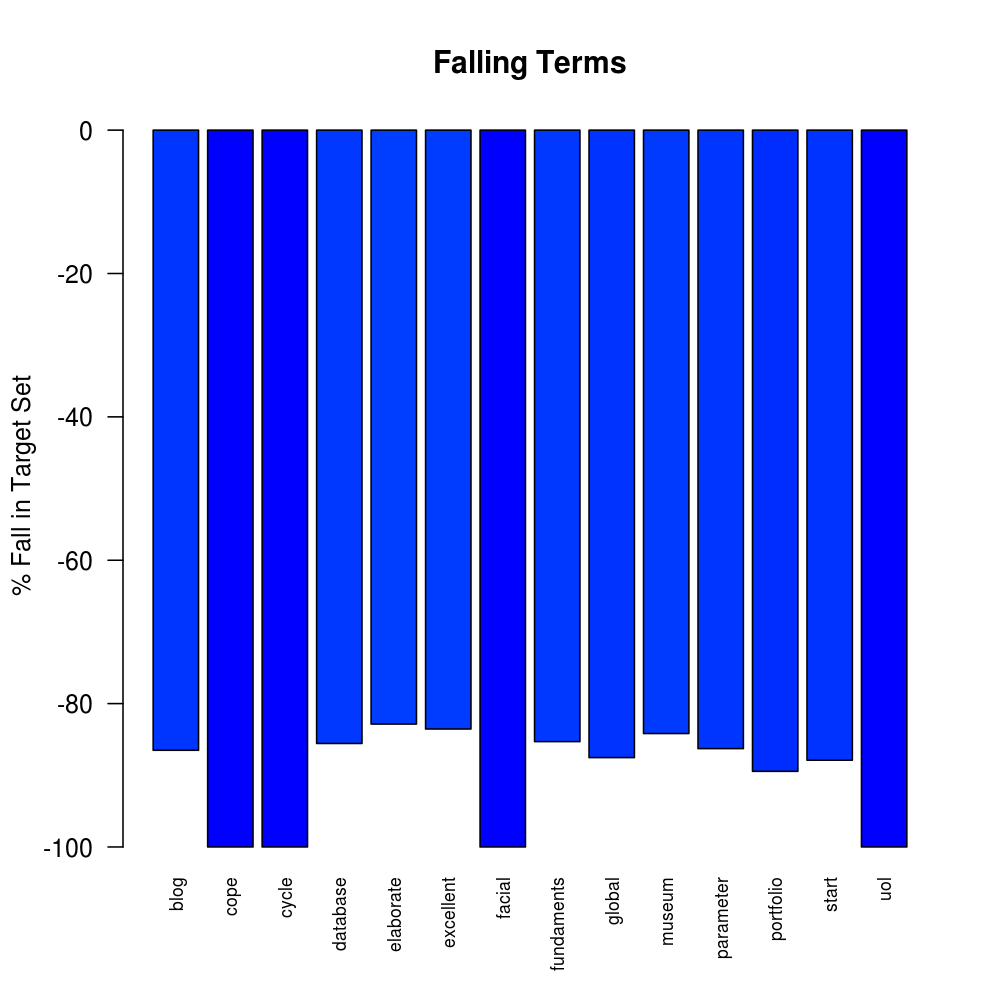
Figure 17: Highlighted falling terms and their percentage of fall. Colour coding matches the % fall.
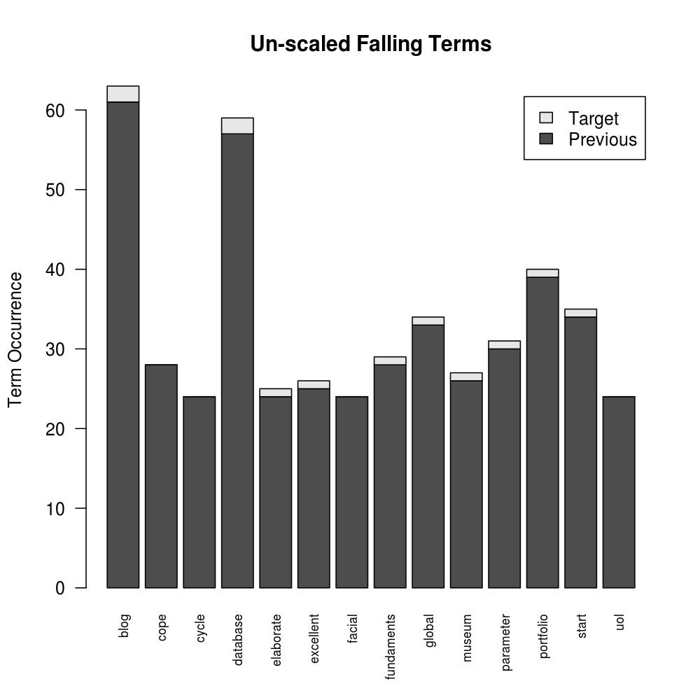
Figure 18: The number of occurences of the Falling Terms in the past and target sets of abstracts.
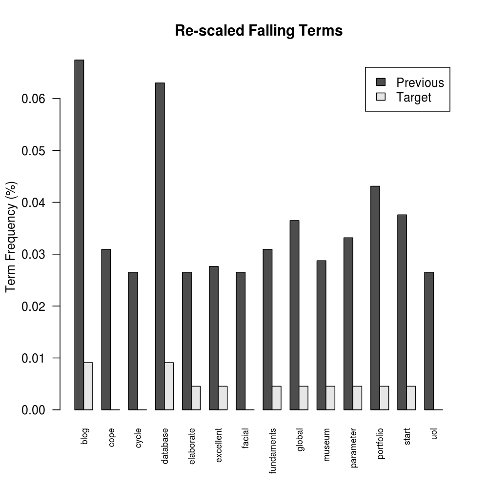
Figure 19: Comparison of the proportion of all stemmed words that are the term in question in both the previous and target year.
Copyright, Licence and Credits
Quoted abstracts are © the respective publisher, as follows:
This work was undertaken as part of the TEL-Map Project; TEL-Map is a support and coordination action within EC IST FP7 Technology Enhanced Learning.
Generated using Brew with "Conference BrewTemplate.html" v0.2.